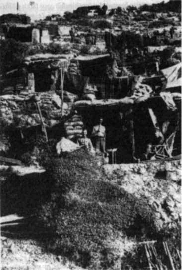

Bu tehlikeyi hesaba katan 26. Alay Komutanı Kadri Bey, Tümen Komutanının iznini alarak Mahmut Sabri Bey'e ikinci savunma hattına geri çekilebileceğini bildirdi.
Gündüz, filonun ateĢi altında çekilmek tehlikeliydi. Kaldı ki Mahmut Sabri Bey hâlâ kuvvetlice bir takviye gelirse Ġngilizleri denize süpüreceklerine güveniyordu.
Ümitle bekleyecekti.80
SABAH Arıburnu Koyundaki filo da erkenden Kabatepe-Balıkçı Damları arasındaki kesimi, Conkbayırı derinliğine kadar ateĢ altına aldı.
Queen Elizabeth de filoya katılmıĢtı.
Anzak Kolordusuna geniĢ bir kıyıbaĢı kazandırmak ve bir yerlerden çıkagelip Anzakları yaka paça kıyıya kadar süren Türk birliklerini kırabilmek için bombardıman çok geniĢ, çok yoğun, çok yıkıcı ve korkunç uzun tutulmuĢtu.
57. Alayın sağ yanındaki iki bölüğün yerleĢtiği kesim denize yakındı. Asker geceyi basit toprak siperler içinde geçirmiĢti. Bom-b ıı«liman sonucu bu iki bölükten pek az asker sağ kurtulabildi. Onlar da ya sağır olmuĢ, ya belleğini yitirmiĢ, ya delirmiĢti.81
Bugün en kritik gündü.
Arıburnu'nu ve Seddülbahir'i savunan birliklere takviye gelmeyecekti.
Kuvveti yarıdan aĢağı düĢmüĢ olan 19. Tümen savunmada kalacaktı. DüĢman taarruz ederse son ere kadar direneceklerdi.
En acı sorun subay ve usta er kaybıydı. Bu kahramanların yerleri nasıl doldurulacaktı?
Bombardıman ilerilere kayınca Anzaklar bazı kesimlerdeki egemen tepeleri ele geçirmek, hedeflere doğru yol açmak ümidiyle saldırıya geçtiler. 57. Alay Conkbayırı yönünü, 27. Alay Malte-pe-Eceabat yönünü kapatıyordu.
Saldırılar ateĢle püskürtüldü.
Cesur bir Anzak birliği 27. Alayın sol kanadında süngü hücumu mesafesine kadar ilerlemiĢti.
Komutlar ve boru sesleriyle süngü hücumuna kalktılar.
Bu iri yarı, bakımlı, güçlü, pervasız adamlar süngüleri ilerde Türk mevzilerine doğru savaĢ naraları atarak koĢarlarken gerçekten korkutucu görünüyorlardı. Türklerin korkarak siperleri boĢaltıp geri çekileceklerini düĢlüyor olmalıydılar.
Türkler geri çekilmediler, tam tersine, Anzakları karĢılamak için siperlerin önüne fırladılar.
Tüfeklerine uzun, ince, parlak süngülerini takmıĢlardı.
Süngü süngüye geldiler.
Bir süngü savaĢı birkaç dakikada baĢlayıp biter. Bu kez de öyle oldu. HaykırıĢlar, bağırtılar, çığlıklar, kükremeler birkaç dakika ya sürdü, ya sürmedi. Sağ kalabilen Anzaklar geldikleri hızla geri çekildiler.
ĠĢ süngüye dayanınca, donanma toplarının, bol paranın, çok askerin hükmü kalmıyor, kanlı oyun eĢit Ģartlar içinde oynanıyordu.
LĠMAN PAġA geceyi Bolayır tepesinde geçirmiĢ, yarı uyuk-lamıĢ, yarı körfezi gözlemiĢ, kaygı içinde bir gece çıkarması beklemiĢ, iki tümeni de alarmda tutmuĢtu.
Ġngilizler çıkarma izlenimi vermek için bazı küçük hareketler yapmıĢlardı ama bu kez Liman PaĢayı bile aldatamamıĢlardı. Ordu Komutanı 30 saat sonra Saros'taki durumun bir gösteri olduğunu anlamıĢtı.
Öğleyin 5. ve 7. Tümenlerin alaylarını deniz yoluyla Eceabat'a göndermeye karar verdi. Ama takviyelerin savaĢ alanına ulaĢmaları günler alacaktı.
ĠĢ iĢten geçtikten, düĢman toprağa pençesini geçirdikten sonra yetiĢeceklerdi.
Kendi de Eceabat'a geçecekti. Kurmay BaĢkanı Kâzım Bey'i Bolayır'a çağırdı. ġu emri verdi:
"24 saat içinde hiçbir çıkarma hareketi olmaması halinde, 5. ve 7. Tümenleri tüm birlikleriyle Eceabat'a yollarsın!"
Aklı hâlâ çıkarmaya takılıydı.
Anadolu yakasındaki birlikler 'emin bir elde', Weber PaĢanın komutası altındaydılar. Güney için de emin bir ele gerek vardı, Türk komutanlara güvenemiyordu. Enver PaĢaya Ģu telgrafı yazdı:
"Gelibolu yarımadasının güneyinde komutayı ele almak üzere Albay Kannengiesser'in derhal ordu emrine gönderilmesini rica ederim" 81a
Albay Kannengiesser Harbiye Nezaretinde Ordu Dairesi Müdürüydü. ÇalıĢkan, düzenli bir askerdi.
Enver PaĢa izin isteğini kabul etti. Yerine birini atamak gereğini duymadı. Yardımcısı Behiç Erkin Bey bu görev için yeterliydi. Bir süre sonra, Behiç Bey'in çok daha baĢarılı olduğu anlaĢılacaktı.
Ġngiliz uçakları Gelibolu'yu bombalıyordu. Liman PaĢa bombalama bitince Gelibolu'ya döndü.
EĢyasını topladı. Gelibolu'dan Eceabat'a, oradan Maltepe'ye geçecek, akĢam 3. Kolordu Karargâhına yerleĢecekti.82
Ġzinsiz hareket eden M. Kemal'in ne korkunç bir felaketi önlediğini Esat PaĢa ile Fahrettin Bey'den ayrıntısıyla öğrenecek, bunun değerini bilecek, kendisini 'bir gün içinde yenilen bir ordunun komutanı olmaktan kurtardığını' unutmayacaktı.82"
15. KOLORDU KOMUTANI Weber PaĢa, Türk kurmayların çırpınıĢları üzerine Liman PaĢa'nın yolladığı son, kesin ve sert emirden sonra 3. Tümenin iki taburlu, eğitimi yetersiz 64. Alayını gece yola çıkarmıĢtı. Yollamak için Kolordunun en zayıf alayını seçmiĢti. Ordu bastırınca yine hiç acele etmeden bir alay daha yollayacaktı. Bu da Kolordunun Çanakkale iskelesine en uzaktaki alayıydı (33.
Alay).
Alman komutanlar bu gecikmelerin, bu kayıtsızlıkların Arıburnu ve Seddülbahir cephelerinde kaç cana mal olduğunu, olacağını umursamıyorlardı. Bu tavırları nefrete ve kuĢkulara yol açacaktı.
64. Alay gece durmadan yürüyerek Çanakkale'ye geldi. Bugün karĢıya geçmek ve 19. Tümenin emrine girmek için gemi beklemeye koyuldu.
TaĢıma iĢleri için Çanakkale'de bir birim kurulmuĢtu. Birimin baĢındaki komutan alayı karĢıya geçirip savaĢa yetiĢtirmek istiyordu. Bunun için dört bir yana baĢ vurdu, konuĢtu, yalvardı, tehdit etti, küfretti, tepindi, masayı yumrukladı, bıyıklarını yoldu ama bir sonuç alamadı.
BoĢta bir gemicik bile yoktu.82b
ERTUĞRUL KOYU'NDA zaman geçiyor, hareket geliĢmiyordu. River Clyde gemisindekilerle kıyıya çıkıp da kımıldayamayan askerlerde bunalım belirtileri görülmeye baĢlamıĢtı.
Komutan vurulmuĢtu.
Yeni komutan ve kurmaylar, gemide kalanları, kayıp vermeyi göze alarak karaya çıkarmaya karar verdiler, kararlarını da hemen uyguladılar.
Otomatik topların, çift namlulu makineli tüfeklerin koruyucu ateĢi altında çıkarma baĢladı.
Küçük gruplar halinde gemiden çıkıp kalenin duvarı dibine koĢmaya baĢladılar. Oldukça kayıp verdiler ama sonunda bütünüyle karaya çıkmayı baĢardılar.
Kalenin duvarları altına, kaya arkalarına saklanıp kalmıĢ olanlarla birleĢtiler, Kalenin arkasından dolanarak köye ilerlediler.
Köyde dünden kalma bir yarım takım vardı.
Takım Komutanı Asteğmen Ġngilizlerin geldiklerini gördü. 30-40 kiĢi 1.000'e yakın askerle süngüleĢerek baĢa çıkamazdı. Ġki Ģey yaptı: Harapkale Tepeye birini yollayarak çok ivedi yardım istedi, gelecek olanlar bu savaĢa kolayca ayak uydurabilsinler diye nasıl savaĢacaklarını da bildirdi.
Sonra da küçük müfrezesini toplayıp ne yapacaklarını anlattı.
Askerler teker teker gizli saklı, kuytu, akla gelmez, beklenilirdik noktalara dağıldılar. Bunlar bol atıĢ
eğitimi yapmıĢ, bir gün önce Ġngiliz askerini süngüyle kovalamıĢ, soğukkanlı, kendine güvenen, usta askerlerdi. Ne yapmaları gerektiğini iyi anlamıĢlardı.
Bulundukları yeri belli etmeden, belli olursa yer değiĢtirerek, Ġngiliz askerlerini avlayacaklardı.
BaĢtan aĢağı yıkıntı halindeki karmakarıĢık köy böyle bir savaĢ için biçilmiĢ kaftandı.
Ġngiliz öncüler göründüler.
Saat 10.00'du.
Tekirdağlı Ali OnbaĢı önde yürüyen Ġngilizi seçti. Sanki babasının çiftliğini ziyarete geliyordu köftehor. Öyle rahat bir hali vardı.
NiĢan aldı. Nefesini tuttu. Tetiğe dokundu. Gümmmm!
Ġngiliz arka üstü uçarak devrildi.
Ġngiliz resmi harp tarihinin bir efsane gibi anlattığı Seddülbahir Köyü SavaĢı baĢladı.83
Öncüler daha köyün giriĢinde temizlendiler. Tabur Komutanı BinbaĢı Beckvvith daha kalabalık bir öncü birliği sürdü ileri.
Yeni öncüler sağa sola, boĢluklara ateĢ ederek köye girdiler. KarĢı duran bir birlik yoktu. Hatta kimse yoktu. Daha fazla bilgi edinmelerine zaman kalmadı. Sanki her yandan ateĢ yağdı. Nerelerden ateĢ
ediliyordu? Kaç kiĢiydiler? Bunları algılayamadan vurulup serildiler.
Tabur durakladı.
Kiminle savaĢacaklardı?
Birliğin ilerleyemediğini öğrenen River Clyde'taki üç yürekli kurmay subay, BinbaĢı Beckvvith'e yardım için karaya çıkıp koĢtular. Her biri bir küçük müfrezenin baĢına geçti.84
Harapkale Tepe'den yollanan müfreze de bu sırada köyün arkasından yaklaĢmıĢtı. Sessizce yıkıntılara dağılıp gizlendi.85
100 kiĢi etmiĢlerdi.
Bu küçük birlik, saat 14.00'e kadar dört saat, köyü vermeyecek, 1.000'den fazla Ġngiliz askerini durduracak, ağır kayba uğratacaktı.86
Ama birlik de hayli kayıp verecek, iki Takım Komutanı da Ģehit olacaktı.
Giderek küçük köy Ġngiliz askerleriyle doldu. Saklı gizli savaĢmaya imkân kalmadı. Açığa çıkarak savaĢa savaĢa köyü bırakıp Harapkale Tepesinin kuzeyine çekildiler.87
BU SAATTE Gözcübaba Tepesi de iki yandan kuĢatılmıĢtı. Dolu gibi makineli tüfek mermisi yağıyordu tepeye. Dünden beri tepeyi savunan o yiğitliğini anlatmaya söz yetmez küçük birliğe Mahmut Sabri Bey geri çekilmesi için emir verdi. Küçük birlik iyice erimiĢ, neredeyse iki mangaya düĢmüĢtü. Emir ancak birkaç kez yinelendikten sonra tepeyi bırakmaya razı oldular.
Çekildiler.
Bunlar ağlamıyordu. Ağlamaktan beter bir haldeydiler.
Ġngilizler Gözcübaba Tepesi ile Seddülbahir köyüne sağlamca yerleĢince, iki yandan Harapkale Tepeye doğru ilerlemeye baĢladılar. Savunmanın merkeziydi orası. KuĢatılma tehlikesi belirdi.
Mahmut Sabri Bey de artık takviyeden ümidi kesmiĢti.
Orduya 36 saat kazandırmıĢlardı. Ordu bu süre içinde buraya istese bir tümen, iki tümen, hatta üç tümen yığabilirdi. Bu kuvvetin, bir taburun kıyıda tutabildiği düĢmanı denize uçurması için üflemesi yeterdi.
Ama ordu istememiĢti.
ġimdi bu kahraman, fedakâr bölükleri kurtarmak gerekiyordu. Bunlar bir karıĢ yurt toprağını canlarından aziz bilmiĢ askerlerdi. Geri çekilmek zorunlu olmuĢtu. Gündüz, filonun ateĢi altında çekilmek çok tehlikeliydi ama kurtuluĢ için bunu göze almak gerekiyordu.
Birliklere çekilme emri yollandı.
Hafif yaralılar yürürdü. Kımıldamalarında sakınca olmayan yaralıları sırtta, kucakta taĢıyacaklardı.
Sorun ağır yaralı 70 kiĢiydi. Bunlar kımıldatılamayacak, taĢınamayacak kadar ağır yaralıydı. Geriye yollamayı baĢaramadıkları bu silah arkadaĢlarını, kan ve can kardeĢlerini, düĢmanın insanlığına terk ederek gidecekler miydi?
Evet.
Çoğunluğun esenliği için baĢka çare yoktu.
Yanlarına iki teneke içme suyu ile bir çuval ekmek bırakıldı AyrılıĢ çok acıklı oldu. O aciz, yakaran, sitemli, incinmiĢ, terk edileceklerine inanmayan bakıĢlar bir mermiden bin kat daha can yakıcıydı.
AğlaĢarak vedalaĢıldı.88
Derelerin, hendeklerin içinden çekileceklerdi. DüĢmanın ta-buru izlemesi bekleniyordu. Geriden gelecek artçı birlikler gerekirse kendilerini feda ederek taburun çekilmesini koruyacaklardı. Dere kıvrımlarına, çukurlara, birkaç gün yetecek kadar yiyecek ve fiĢek verilen keskin niĢancılar yerleĢtirildi.
Birlikler yürüyüĢe hazırdı.
Parça parça yola çıkıldı.
Korkulan olmadı. DüĢman çekilen birlikleri izlemedi. BoĢaltılan mevzileri doldurmakla yetindi.
Ġzleyecek gücü de yoktu, cesareti de. Büyük direniĢin yarattığı ürküntü subayların da erlerin de yüreklerine iĢlemiĢti.
Fakat filonun lanetlik topları ânında faaliyete geçti. Alçıtepe köyüne kadarki düz alanı yine ustaca yakıp kavurmaya baĢladılar. 10. Bölüğün borazanı donanmaya çok içerliyor, borusundan daha gür sesiyle arada bir Ġngiliz ordusuna sesleniyordu:
"Teke tek gelsene ülen çakal!"
Derelerin suyu mevsim gereği gür ve soğuktu. Yarı bele kadar su içinde yürüyerek, çamura batarak, kayalara takılarak, mermi parçalarından korunmak için ara sıra suya kapanarak, yaralıları ve tüfekleri bırakmadan, öfke, hayal kırıklığı ve keder içinde, Alçıtepe köyüne doğru adım adım çekildiler.89
Gerideki perakende, dağınık, yedek bekleyen küçük birliklerle birleĢtiler.
Sığındere ağzı ile Eski Hisarlık kuzeyi arasında ince, zayıf bir savunma hattı oluĢtu.90
Alay Komutanı Kadri Bey BinbaĢı Mahmut Sabri Bey'e sarıldı, öperek büyük baĢarısını kutladı.
BinbaĢı derin bir alçak gönüllükle, "Görevimizi yaptık.." dedi, "..Allah da yardım etti."90a
26 Nisan 1915:3. Taburun geri çekilmesinden sonra oluĢan durum Ġngilizler denize süpürülmemek için bulundukları yerlere sıkıca yerleĢerek sağlam bir cephe oluĢturmaya bakıyorlardı.
Gece Seddülbahir iskelesine iki Fransız taburu çıktı. Kale dibine sığındılar. Sabah yerleĢeceklerdi.
Birinin komutanı olan BinbaĢı Zimmermann Türkleri küçük görmekteydi:
"Bunlarla savaĢmak çok eğlenceli olacak. SavaĢmak için sabırsızlanıyorum."91
Seddülbahir kesiminde bu gece savaĢsız geçecekti.
19. TÜMEN Komutanı Yarbay M. Kemal karargâhını, Arıbur-nu cephesini görerek yönetebileceği uygun, yüksek bir yerde kurdu. Burası Kemalyeri diye anılacaktı.92
Çok tedirgindi.
DüĢman her saat daha kalabalıklaĢıyor, daha güçleniyordu.
Taarruz için takviye gönderilmesini, iki alayının kayıplarının karĢılanmasını ve harita yollanmasını istedi. Yalnız tümenlere harita verilebilmiĢti. Alaylar ve taburlar haritasız, göz kararı savaĢıyorlardı.
Kolordu, harita için sabırlı olmalarını istedi, Anadolu yakasından yollanan iki alayı 19. Tümen emrine verdiğini bildirdi. Alaylar ertesi sabah geleceklerdi.
SavaĢmamıĢ iki alay ciddi kuvvetti.
Ertesi gün taarruza karar verdi. Taarruz sabah 07.30'da baĢlayacaktı.
Anzaklar bugün talihlerini denemiĢ ama hiçbir kesimde sonuç alamamıĢlardı. Onlar da gece biraz siper kazacak, biraz dinleneceklerdi.
Bu gece burda da savaĢ olmayacaktı.
Ama iki yan da çok sinirliydi. Gündüzki çatıĢmalar, süngüleĢmeler nedeniyle siperler arasındaki alanlar, ölü ve yaralılarla doluydu. Yaralılar inliyor, su diye yalvarıyor, kimi de ağlıyordu.
Yakınlardaki yaralıları sürükleyerek siperlere alabilmiĢlerdi. Ama uzaktakilere ulaĢmak, onlara yardım etmek imkânsızdı. Aydınlatma fiĢekleri yüzünden her hareket görülüyor, biri bir yaralıya yardım için siper dıĢına çıkmaya yeltense, yüzlerce tüfek birden patlıyordu. Ġki yan da daha yeni kaybettikleri silah arkadaĢlarının acısı yüzünden birbirinden ölesiye nefret etmekteydi. SavaĢın ikinci gününde oldukları için duygular çok keskindi.
Anzak siperlerine yakın bir yerde kalmıĢ yaralı bir Anzak subayı sızlanıyor, ağlıyor, bağırarak yardım istiyordu.
SavaĢtan daha yıpratıcı bir gece geçirmekteydiler. Bu yakarıĢa dayanmak çok zordu. Yaralının sesi gittikçe kısılıyor ama kesilmiyordu.
Ay ve yıldız ıĢığında, karĢıdaki Türk siperinden bir tüfeğin ucuna takılmıĢ bir beyaz gömleğin sallandığı fark edildi. En yakın Anzak siperindeki subay ve askerler dikkat kesildiler. Bu olayın anlamı neydi? Türkler durup dururken teslim mi oluyorlardı? Tüfeklerini kurup beklediler. Uzun boylu bir Türk askeri siperden çıktı. Silahı yoktu. Silahsız olduğu anlaĢılsın diye siperin önünde, çekinmeden bir an öylece durdu. Sonra sesin geldiği yana doğru cesetlere basmamak için yavaĢ yavaĢ
yürüdü. Eğildi, yaralı Anzak subayını kucağına aldı.
Anzaklar tüfeklerini doğrulttular. Subayı kendi siperine götürmeye kalkıĢırsa vuracaklardı.
Hayır!
Onların siperine doğru yürümeye baĢladı. Türkün ne yapmak istediğini anlamıĢlardı. Heyecandan, saygıdan solukları kesildi.
Türk askeri yaralı subayı usulca siperin önüne bıraktı. Anzakların dilleri tutulmuĢtu. Bir teĢekkür bile edemediler. Asker telaĢ etmeden siperine döndü.
Yaralı subayı yavaĢça sipere aldılar.
Günlerce bu olay konuĢulacak, Ġngiliz propagandası sarsılmaya, Anzakların Türklere bakıĢı değiĢmeye baĢlayacaktı.922
YÜZBAġI E.C. Böyle komutasındaki E-14 borda markalı denizaltı, gece, fark edilene kadar su üstünde giderek, fark edildiği zaman dalarak, Boğaz'ı geçip mayın bölgesine ulaĢtı.
Derine daldı.
Mayınların altından çok yavaĢ, dura dura, birkaç saatte, ecel teri dökerek geçtiler. Denizaltı Nara Burnuna yakın yüzeye çıktı ve ânında görüldü.
Marmara'ya birden çok düĢman denizaltısının geçmiĢ olduğu sanılarak, bir kruvazör, bir muhrip ve torpidobotlardan oluĢan bir filo kurulmuĢ, asker ve cephane taĢıyan gemileri korumak ve denizaltı avlamakla görevlendirilmiĢti.
Bu torpidobotlardan biri Nara Burnu yakınında E-14'ü gördü. Denizaltı torpidobotun hücumundan dalarak kurtuldu. Bataryalarını dolduramamıĢtı. Büyük zorluklar yaĢayacak ama sonunda Marmara'ya geçmeyi baĢaracaktı.92b
Çanakkale su altından ikinci kez geçilmiĢti. Türkiye'nin bunu önleyebilecek ne denizaltısı vardı, ne deneyi, ne de teknik yetkinliği.
Bu yoksunluk, yetersizlik giderek büyük sorunlara yol açacak, 600 yıllık imparatorluk acıklı ve gülünç durumlara düĢecekti.
27 NĠSAN Salı sabahı, filolar Arıburnu'nda da Seddülbahir'de de Türk mevzilerini yine yoğun ateĢ
altına aldılar. Saat 07.30'du.
Beklenen iki alay da gelmemiĢti. 64. Alay Eceabat'a daha yeni geçebilmiĢti, yoldaydı. Öteki alaydan bir haber yoktu. Liman PaĢanın esnek, oynak savunma yöntemi' kâğıt üzerinde kalmıĢtı. Üçüncü gündü ve Arıburnu'na daha bir tek yeni asker ulaĢmamıĢtı.
Birlikler savaĢ düzenine, asker havaya girmiĢti.
M. Kemal taarruzu baĢlattı.
Birlikler harekete geçtiler.
100'den fazla Anzak makineli tüfeği takırdamaya baĢladı, takviye edilen filoda bugün 255 namlu vardı.93 Anzak mevzileri ile Türk birlikleri arasında ateĢten bir duvar oluĢturdular.
Birlikler arazinin kıvrımlarından yararlanarak ilerleyip Anık siperlerine yaklaĢtılar. AteĢten duvarı aĢmak için fırsat kollayacaklardı.
Saat 10.00'a doğru iki taburlu 64. Alay cephe gerisine ulaĢtı.933 Geri birimlerin, yardımcı birliklerin arasından geçerek cepheye yanaĢacaktı. Cephe gerisi askerleri, yeni olduğunu anladıkları birliğe,
"HoĢgeldiniz" diye sesleniyor, sonra da uyarıda bulunuyorlardı:
"Burada bir adım geri gidilmez, ona göre!"
64. Alay yardıma gelen ilk birlikti ve ilk kez savaĢa giriyordu. Gençlerden birkaçı korktu. Yakınlara düĢen büyük mermilerin basıncı insanı yere çarpıyor, kulak zarını patlatıyordu. Ġlk yaralılara, ilk Ģehitlere alıĢamadılar. Siniri bozulanlar, ağlayanlar oldu. Ama subayları, çavuĢları, hepsini tek tek tanıyor, huylarını biliyorlardı. Severek, azarlayarak, korkutarak yatıĢtırdılar.93b SavaĢ yayıldı, geliĢti, Ģiddetlendi.
Cephenin ortasındaki birlikler, ateĢ duvarına daldılar. Ok gibi delip geçerek siperlere girdiler. Anzak cephesinde yer yer sökülmeler, çökmeler, geri çekilmeler oldu.94
Arkada hemen harekete geçerek bu baĢarıları derinleĢtirecek, geniĢletecek taze bir birlik olsa, cephe yarılacak, Anzaklar denize sürülebilecekti. Beklenen ikinci alayın görevi bu baĢarıları beslemekti.
Gemi bulup da Boğaz'ı zamanında geçemediği için çok sonra, akĢam hava karardıktan sonra gelebildi.943
O saate kadar düĢman toparlanmıĢ, sorunlu yerleri yeni birliklerle güçlendirmiĢ, taarruz da hızını kaybetmiĢti.
Gece taarruzu için hazırlığa giriĢildi.
DüĢman siperlerini henüz kum torbaları, çelik kalkanlar, t örgüler ve kara mayınları ile güçlendirememiĢti. Anzak cephesini çökertebilmek için son fırsatlardı bunlar. Anzaklar yürekli askerlerdi. Bir de siperlerini güçlendirirlerse, sonuç almak için ağır toplara gerek olacaktı.
5. Orduda ağır top yoktu.
Kılıçlarını çeken teğmenler, yüzbaĢılar birliklerinin baĢlarına geçtiler. Ölüme ya da zafere en önde onlar koĢacaklardı. Tabur ve alay komutanları da askerlerini uğurlamak için ateĢ hatlarına geldiler.
Kısa, keskin komutlar, hücum boruları, trampet sesleri ile gece taarruzu baĢladı. Bu seslere tüfek, el bombası, makineli tüfek ve top sesleri katılacak, Arıburnu vadilerini ve uçurumlarını savaĢ uğultusu dolduracaktı.
Türk, yurdunu geri almak istiyordu. Anzak, denize dökülmek ile Türk süngüsü arasında sıkıĢıp kalmıĢtı. O da çekildiği bu son çizgide tutunmak istiyordu. Canını diĢine takıp bu çizgiyi savunacaktı.
Cephe, Ġngiltereden yeni gelen Deniz Piyade Tümeninden 4 taburla takviye edildi. Ama komutanlar durumdan emin değildiler. Balıkçı gemileri, filikalar, savaĢ gemilerinin botları, Arıburnu Koyunda bekletiliyor, olası bir boĢaltmaya hazır tutuluyorlardı.94b Kıran kırana bir savaĢ oldu.
AteĢ duvarlarını sağ aĢabilen Mehmetler, Mehmetçikler, bazı siperleri ve duyarlı noktaları ele geçirdiler. Ama çok azalmıĢlardı, güçleri cepheyi yarmaya, Anzakları denize sürmeye, süpürmeye yetmedi.
Taarruza son verildi.
Savunmaya geçtiler.95
ANZAK askeri Frank Parken'in günlüğünden:
"Birliğimizin 1.000 mevcudundan 715'ini kaybetmiĢiz. YaĢlı bir binbaĢı 'Tanrım, adamlarım nerde?' diye ağlıyor. Bugün bize içkiyi kaĢıkla değil matra dolusu verdiler" 95a BU SABAH Seddülbahir'de, bombardımandan sonra bir hareket olmamıĢtı. DüĢman Teke Koyu'na yiyecek, içecek, silah, cephane, araç-gereç yığıyordu. Yeni gelen Deniz Piyade Tümeni de tabur tabur karaya çıkmaktaydı.
Kıyılara kadar sızan küçük keĢif kolları Ġngiliz zenginliğini ve gücünü izliyorlardı:
"Canına yandığımın zenginliği!"
"Biz de dünyayı soysak zengin olurduk."
"KeĢke soysaymıĢız."
"Tövbe de, günah!"
Fransız Tümeni de karaya çıkarak Seddülbahir'in doğu yanını, Kaleyi, köyü, Morto Koyunu ve Eski Hisarlık'ı Ġngiliz birlikle-ı Ġnden devralmaya baĢlamıĢtı.
Halil Sami Bey sıkıntıdaydı. BaĢkomutanlıktan orduya, ordudan kolorduya, kolordudan da zorunlu olarak 9. Tümene "DüĢman daha güçlenmeden denize dök!" emri yağmaktaydı.
Takviye olarak Saros'taki 7. Tümenden yalnız bir alay gelmiĢ-li, BinbaĢı Halit Bey'in komutasındaki 20. Alaydı bu.95b
O kadar.
Eksik, yorgun bir tümen, bir alaylık bir takviye alarak sürekli çoğalan Ġngiliz ve Fransız Tümenlerini nasıl denize dökecekti?
BaĢlangıçta yapılan büyük yanlıĢlığın Ģimdi kanla temizlenmesi isteniyordu.
BaĢka çare de kalmamıĢtı artık.
Halil Sami Bey bir taarruz planı tasarlarken Ġngilizler saat 16.00'da harekete geçtiler. Onlar da Türkleri güçlenmeden bastırmak istiyorlardı. Keskin niĢancılara bol kurban vererek ilerlediler. Ġnce, derme çatma savunma hattını biraz geri iterek Sığındere ağzı ile Eski Hisarlık çizgisinde durdular.
Kapsamlı taarruz için burada hazırlık yapacaklardı.
Halil Sami Bey komutanları memnun etmek için bir gece taarruzuna karar verdi. Ne var ki zavallı 9.
Tümenin böyle bir taarruzu baĢaracak dermanı yoktu. Kolayca püskürtüldü.
Asker boĢuna uykusuz kalmıĢ, yorulmuĢ, birlikler daha da karıĢmıĢtı. Aksi gibi sabah BirleĢik Ordu taarruza geçecekti.96
ESAT PAġA ve kolordu kurmayları, Arıburnu'ndaki ve Seddülbahir'deki taarruzlar durana kadar uyumamıĢlardı. Buralardaki birlikleri ciddi olarak takviye etmedikçe düĢmanı süpürmek mümkün olmayacaktı.
Yetersiz birliklerle taarruz can alıyordu.
Enver PaĢa sürekli taarruz edilmesini emrediyor, düĢmanın denize dökülmesini istiyor, bunun gecikmiĢ olmasına sinirleniyordu. Çünkü Liman PaĢa, kararsızlığını örtmek, yönteminin baĢarı-
sızlığını saklamak için BaĢkomutana düĢmanın gücü ve Türk birliklerinin çabaları hakkında eksik bilgi vermekteydi.963
Liman PaĢanın yöntemi, kâğıt üzerinde, düĢmanın daha ilk karaya çıktığı gün denize dökülmesini öngörüyordu. Liman PaĢa kendi yöntemini çalıĢtıramamıĢtı. ġimdi durumunu kurtarmak için o da birlikleri sürekli taarruza zorluyordu.
Liman PaĢanın raporları nedeniyle BaĢkomutanlıkta düĢmanın denize dökülememesinin sorumlularının birlikler olduğu izlenimi uyanmıĢtı.
Kurmay BaĢkanı Fahrettin Bey, "PaĢam.." dedi, "..Enver PaĢaya askerin canını, kanını esirgemeden döktüğünü, harikalar yarattığını, Ģu âna kadar ciddi bir takviyenin gelmediğini, buna karĢılık Saros'ta bir, Çanakkale yakasında bir tümenin boĢ durduğunu, savaĢan birliklere çok geç olarak, küçük ve eksik birlikler yollandığını, düĢmanın böyle denize dökülemeyeceğini bildirelim. Birliklerimize yazık oluyor."
PaĢayı, Liman PaĢayı aĢarak BaĢkomutana gerçekleri açıklayan bir rapor yollamaya ikna etmek savaĢtan zor oldu.
Hazırlanan taslağı birçok kez düzeltti.
Zorlukla razı olup imzaladı.
Rapor sabah saat 05.00'te Ģifrelendi ve BaĢkomutanlığa tellendi. Gizli bir iĢ yapmıĢ olmamak için bir kopyası da Liman PaĢaya yollandı.96"
BaĢkomutanın yanıtı öğleden önce geldi.
Saros'taki 5. Tümenin hemen güneye alınmasını emrediyor, Çanakkale için iki tümen ayrıldığını bildiriyordu: 15. Tümen ile Mersin'den Ġstanbul'a alınan 16. Tümen.
Ġki tümen de hemen yola çıkarılacaktı.960 Bunlar iyi geliĢmelerdi. Ama Enver PaĢa durmadan taarruz edilmesi için ısrar edip duracak, herkesi zorlayacaktı.
16. TÜMENĠN bir alayının (125. Alay) Çanakkale'ye deniz oluyla yollanması uygun görülmüĢtü.
Öteki iki alay karadan gidecekti. 125. Alay hareket emrini sabah aldı, iki saatte hazırlanıp HaydarpaĢa'ya geldi. Kimse eviyle vedalaĢamadı. Bu yüzden uğurlamaya gelen de olamadı.
Alayı HaydarpaĢa'da üç yolcu gemisi hazır bekliyordu.
Taburlar, toplar, makineli tüfek bölüğü, sağlıkçılar, ekmekçi takımı, ağırlıklar, arabalar, atlar, katırlar hiç bekletilmeden gemilere bindirildiler. Dolan gemi denizaltı tehlikesine karĢı bir torpilli nıun eĢliğinde hareket ediyordu. Torpidolar yol boyunca gemilerin çevresinde dört döneceklerdi.
AE-2 gemileri görmüĢ ama torpidobotlar yüzünden uzak durmuĢtu.
AkĢam Çanakkale Boğazına girdiler. Kilye limanı aĢırtma ateĢ altında olduğu için yüksek tepelerin koruduğu AkbaĢ'ta demirlediler.
Hâlâ bir iskele yapılamamıĢtı.
3.000 asker, silahlar, toplar, ağırlıklar, atlar ve katırlar, gemi ıĢıldaklarının, el fenerlerinin aydınlığında, düdük, bağırıĢ, haykırıĢ, kiĢneme sesleri içinde, motorlar ve mavnalarla karaya taĢındı.
Bu çetin iĢ uzun sürecek, sabah sona erecekti.
Tümenin öteki iki alayı Sirkeci'den Uzunköprü'ye trenle, oradan cepheye yürüye yürüye gelecekti.
Bu yolculuk 8-9 gün sürüyordu.
Saros'tan sonra, kara yolunu savaĢ gemileri topa tutuyor, uçaklar bombalıyordu. Bu yüzden geceleri yürüyecek, gündüzleri elveriĢli yerlerde gizleneceklerdi.
27 NĠSAN günlü Ġkdam gazetesinde kısa bir haber yer aldı:
"Ġngilizler, Bozcaada Müftüsünü Çanakkale tabyalarına Ģifreli iĢaretle haber vermekle suçlayarak idam etmiĢlerdir." 96d
GENERAL Hunter Weston Alçı Tepe'nin bir hamlede ele geçirilemeyeceğini anlamıĢ, iki aĢamalı bir plan hazırlatmıĢtı. Birinci aĢamada Alçıtepe köyü ve gerisindeki Yassı Tepe ele geçirilecek, sonra doğuya, Alçı Tepeye dönülecekti.
Askeri tarihlerin 'Birinci Kirte SavaĢı' adını verdikleri savaĢ sabah (28 Nisan ÇarĢamba) baĢlayacaktı.97
Taarruza 17.500 Ġngiliz ve Fransız askeri katılacak, donanma 470 topuyla iki yandan Türk mevzilerini ateĢe boğacaktı. Queen Elizabeth de bugün batı kıyısındaki filoda yer alıyordu.
Türkler ne durumdaydı?
Türk cephesinin ortası Alçıtepe köyü idi.
Yolun batı yanında, birinci hatta, Bolayır'daki 7. Tümenden gelen 20. Alay vardı..
Yolun doğu yanında ise, yine 7. Tümenden gelen ikinci alay (19. Alay) yer alacaktı ama o daha gemiden yeni inmiĢti. Yoldaydı. Onun yerini savaĢ artığı küçük, perakende, derme çatma birlikler almıĢtı.
26. Alayın 2. ve 3. Taburları, sayıları çok azaldığı için birleĢtirilerek geçici bir birlik oluĢturulmuĢtu.
Birinci Kirte SavaĢı: 28 Nisan 1915
BinbaĢı Mahmut Sabri Bey’in komutası altındaki bu birlik, doğu kanattaki bu yamalı bohça cephenin gerisinde, yedekteydi. Birlik çoğu hafif yaralı 820 kili Bunlar ilk günün sağ kalmıĢ kahramanlarıydı.
Bütün cephede, dördü doğuda, dördü batıda, yalnız sekiz ağır makineli tüfek bulunuyordu.
Türk cephesinin durumu böyle, gücü bu kadardı.
SavaĢın dördüncü günüydü ve takviye olarak gele gele yalnız bil alay gelmiĢti. Bütün güney kesimini genel olarak dört kat kalabalık düĢmana karĢı hâlâ 9. Tümen savunmak durumundaydı.98
Bu dağınık, siperlerini daha berkitememiĢ, uykusuz, yaralı kuvvetle, donanma destekli büyük bir taarruzu durdurmak, geri püskürtmek mümkün müydü? Mantığa, genel askeri ölçülere göre çok zordu, dürüstçesi imkânsızdı. Bu nedenle de tümen, kolordu ve ordu komutanları ateĢ
üzerindeydiler. Yoldaki alaya ardarda acele etmesini emredeceklerdi.
Alay uçamazdı ya.
Zorunlu yürüyüĢ hızıyla, mola vermeden, soluk soluğa yürüyordu. SavaĢ telaĢı içinde geleceği yer ayrıntılı biçimde tanımlanmadığı için yanlıĢ yola sapacak, daha da gecikecekti.
SavaĢ saat 08.00'de donanmanın topları ve 28 Ġngiliz topunun ateĢ püskürmesiyle baĢladı.99
Arasız 60 dakika sürdü.
60 dakika ölüm, yıkım, kıyım kustular.
Asker korunmak için toprağa girdi, karıĢtı, toprak oldu sanki.
Bombardıman sona erdi. Ġngiliz birlikleri batı ve orta kesime, Fransızlar doğu kesime taarruza kalktılar.
Askerler, savaĢmak için taĢın ve toprağın altından, ölüler canlanır, ruhlar ete kemiğe bürünür gibi doğruldular.
Ürpertici bir andı.
Batı kesimdeki 20. Alayın cephesine taarruz eden Ġngilizler alayın 6 katıydı. Görevleri bu kesimdeki cepheyi yarıp gerideki Yassı Tepeye ulaĢmaktı. Türklerin donanmanın ateĢi altında ezilmiĢ
olduklarını düĢünerek ve sayılarına güvenerek iyimserce ilerlediler.
Alay, yaklaĢmalarını soğukkanlılıkla bekledi. Komutan böyle davranılmasını emretmiĢti. Biri bile heyecanlanıp da tetiğe dokunmadı. Çıt çıkmıyordu. Ġngilizler arada 100-150 metre kalınca, süngü hücumuna kalkarak koĢmaya baĢladılar. Bir dakika sonra Türk siperlerine dalacaklardı.
Bu kesimde bulunan binden fazla tüfek ve iki ağır makineli tüfek birden çalıĢarak Ġngilizleri biçtiler.
Pek azı kurtulabildi.
Ġngilizler bu kesimde taarruza ara verdiler.
Türk cephesinin ortasına yüklendiler. Orta kesim zorlukla da olsa dayanıyordu.
Ama doğu kanatta durum farklıydı. SavaĢ çok yırtıcı baĢlamıĢtı. Saat 10.00'da hem Türk, hem Fransız cephesinde dalgalanmalar, sarsılmalar baĢladı. Senegallilerde panik iĢaretleri görülüyordu. Bu kesimdeki Türk askerlerinin büyük bölümü de 24 Nisan gecesinden beri doğru dürüst uyumamıĢ, dinlenememiĢ, sürekli çatıĢmıĢ, yürümüĢ, hücum etmiĢ, siper kazmıĢtı. Artık bitmiĢlerdi. Kimse bu insancıklardan daha fazlasını isteyemezdi.
Türkler biraz daha direnebilse Fransızlar çözülecekti.
Önce kıyıda, özellikle Goliath zırhlısının ateĢi altında bunalmıĢ küçük bir Türk birliği çözüldü. Böyle bir durumda subayların kaçakları, bozguncuları vurma yetkileri vardı. Ama hiçbir subay silahını çekmedi. Bunlar ne kaçaktı, ne bozguncu. Güçlerinin son damlasını kullanmıĢ ve tükenmiĢlerdi.
Bunalım yayıldı. Doğu kanadı usul usul geriye doğru dağılmaya baĢladı. En korkulan, en tehlikeli Ģey olmuĢ, Alçı Tepe yolu açılmıĢtı. Alçı Tepenin ilerisi Kilitbahir platosuydu.
DüĢman ilerlese durduracak kuvvet yoktu.
Durumu düzeltmek imkânsızdı. Savunma bütünüyle çökmeden, Alçıtepe köyünün gerisine çekilmeliydi. O zaman geciken 19. Alay da belki yeni hattın doğu kanadında yerini alabilir, cephe yeniden kurularak Alçıtepe yolu tıkanabilirdi.
Çekilme emri doğudaki 26. Alay, batıdaki 20. Alay komutanlarına gönderildi.
26. Alayın bölgesinde birliklerin çoğu zaten geri çekiliyor, cephe yer yer boĢalıyordu. Komutan olsa olsa çözülen birlikleri çekilecekleri yeni çizgide toplamayı baĢarabilirdi.
20. Alay Komutanının ise emri alır almaz alayını Alçıtepe kominin gerisindeki yeni çizgiye çekmesi gerekiyordu.
Hu karıĢık, tehlikeli aĢamada devreye Çanakkale ruhu girdi. I doğu kanadı çekildi, ne batı. Neler oldu da cephe çökmedi, as-ı ı ı geri çekilmedi?
Doğu kanatta Seddülbahir kahramanı BinbaĢı Mahmut Sabri Hey geçici birliği ile geride, yedekteydi.
Birkaç saatçik de olsa dinlenmiĢlerdi.
26. Alay Komutanı Kadri Bey cephedeki kötü durumu bildi-ı ince, birliğini silahbaĢı ettirdi, yürüttü.
Kendi de öne geçti. BoĢal-iıl.uı mevzilere doğru ilerlemeye baĢladılar.
Çözülen birliklerin askerleri, ayaklarını sürüyerek, bitik bir halde, baĢları önlerinde, öbek öbek geri geliyorlardı. Ġlk öbek, Mahmut Sabri Bey'i ve arkasındakileri, Yahya ÇavuĢu, Bigalı Mehmet ÇavuĢu, Tekirdağlı Ali OnbaĢıyı, Karacaoğlan, Aytepe, Teke ve Ertuğrul Koyu, Seddülbahir köyü gazilerini görünce durdu.
BinbaĢı, "Hayrola?.." diye sordu, "..Fransızlardan mı korktunuz?" Sırf merak ettiği için soruyor gibiydi. 'Korkmak' sözcüğü hepsinin onuruna dokundu. Gözleri doldu. Biri öne çıktı:
"DüĢmandan korkan alçaktır!"
Biri inler gibi ekledi:
"Gücümüz bitti komutanım."
GevĢek, dağınık, hasta bir duruĢu vardı. Asker olduğunu unutmuĢ gibiydi. BinbaĢı sert bir sesle uyarınca, uyanıp toplandı, esas duruĢa geçti. Ötekiler de toparlandılar. BinbaĢının beklediği rüzgâr esmiĢ, yeniden Çanakkale askeri olmuĢlardı. Geriden gelenler de onlara bakarak saygıyla durdular.
BinbaĢı "Korkmadığınızı biliyorum.." dedi, "..Niye korkasınız? Sizin gölgeniz bile bu düĢmanı yenmeye yeter. Beni iyi dinleyin. Türkün gücü bitmez. Türkün can evinde her zaman zor gün için yedek güç bulunur. Haydi gelin, namus görevimizi yapalım, vatan anamızı koruyalım!"
Yanıt beklemeden yürüdü.
Vatan ana!
Bu sihirli söz askerleri titretti, silkeledi, doğrulttu.
Geri çekilenler birliğe katıldılar. Birlik yürüdükçe büyüyordu. Mahmut Sabri Bey'in ve silah arkadaĢlarının cepheye yürüdüğünü gören kim geriye gidebilirdi?
Çözülenlerin tümü geri döndü.
ÇözülmemiĢ birlikler canlandı. Bunalım bitti. Cephenin doğu kanadı yeniden kuruldu. Bu çözülüĢ ve toparlanıĢ içinde geri çekilme emri akla bile gelmedi.
Batı kanadında baĢka bir olay yaĢanmıĢtı.
20. Alay Komutanı BinbaĢı Halit Bey, tabur mevzilerini dolaĢıyor, subay ve askerleri gözlüyordu.
Asker düĢmanı tanımıĢ, dövüĢ tarzını anlamıĢtı. Rahat dövüĢüyordu. Subayların hepsi Ģehitlik rütbesini kuĢanmaya hazırdılar.
Direniyor ve düĢmanı yıpratıyorlardı.
Çekilme emri Halit Bey'i ĢaĢırttı. DüĢmanla iç içe gibiydiler. Çözülüp ayrılmaları alayı ve savunmayı tehlikeye düĢürürdü. Üstelik bu kesimde Alçıtepe köyünün de gerisine kadar çekilmeyi gerektirecek bir durum yoktu.
Milletine ve tarihe karĢı sorumluluğu üzerine aldı, çekilme emrini birliklerinden gizledi.
Geri çekilmedi.100
DövüĢe devam ettiler.
Zaman kana bulana bulana geçti, saat 13.00 u buldu.
Batı kanadı sağlamca yerinde durmaktaydı, doğu kanadı yeniden kurulmuĢtu.
Tümen Komutanı Halil Sami Bey, emrinin dinlenmemesini sorun etmedi, kan ağlayarak verdiği çekilme emrini sevinçle geri aldı.
SAVAġ durgunlaĢmıĢtı.
Gittikçe yaklaĢan bir homurtu duyuldu. Yine bir düĢman uçağı geliyordu herhalde. Tüfekleri havaya diktiler. Topluca ateĢ edeceklerdi. Çanakkale yakasında askerlerin hep birden ateĢ ederek bir uçak düĢürdüğünü duymuĢlardı.
Ġnsafsız düĢman uçakları Kızılay iĢaretli hastaneleri bile bombalıyordu.101
Pilot Üstteğmen Fazıl Bey
BaĢlarının üzerinden güüüüür diye iki uçak geçti. Kanatlarının altında ay-yıldızlı arma vardı.
Türk uçağıydı bunlar!
Asker savaĢı, nöbeti bıraktı, yarasını unuttu, uçaklara el kol sallamaya, haykırmaya baĢladı. Uçakların ve ay-yıldızın Ģöyle bir görünmesi bile askeri mutlu etmiĢti.
Türklerin de iki uçağı vardı iĢte!
Pilotlar askere moral vereceğini bildikleri için mevzilerin üzerinde kısa bir gösteri yaptılar. Sonra biri batıya kaydı, alçaldı, Ġngiliz mevzilerini bombaladı. Ġkincisi Morto Koyuna süzüldü, oradaki iskelelere 8 bomba attı.102
Asker sevinç içindeydi.
TÜRKLERE bu sevinci çok gören bir Ġngiliz taburu, bir savaĢ gemisinin ateĢ desteği altında, deniz ile Sığındere arasındaki dar kesimde taarruza geçti. Burada 20. Alaydan bir bölük ile bir takım vardı.
Kısa bir ateĢ savaĢından sonra Ġngilizler, karĢılarında küçük bir kuvvet olduğunu anlayınca, iyice yaklaĢtılar, hücum mesafesine girince süngü hücumuna kalktılar. Çok yanlıĢ bir iĢ yapmıĢlardı.
YanlıĢ yaptıklarını bir dakika sonra anladılar.
Bu küçük kuvvet, uzun süngüleriyle taburu karĢıladı, kendinden üstün birliği dağıttı, sağ kalanları Sığındere ağzına kadar kovaladı.
Takımın komutanı teğmen, takımıyla birlikte koĢuyor, bir yandan da "Sömürgelerde acı çeken, soyulan, korkudan titreyen, uyanmasına izin verilmeyen, el ayak öpen, uĢaklık yapan tüm zavallılar Ģu tavĢan gibi kaçan Ġngilizleri görseydiler" diye düĢünüyordu.
Çanakkale SavaĢı, hiçbir devletin, hiçbir ordunun, hiçbir silahın, yurt sevgisinden ve milli onurdan daha güçlü olmadığını, olamayacağını öğretmekteydi. Bu büyük gerçek her gün bir kez daha kanıtlanıyordu. Bunu yaĢamak herkese yıkılmaz bir özgüven veriyordu. Bundan sonra bir dıĢ
kudretten, ancak Çanakkale'yi yaĢamayanlar, milli tarihi okuyup kavrayamayanlar ile onursuzlar ve satılıklar korkacaktı.
Bu arada 19. Alay da doğu kesimine yetiĢip bu kesimin ortasına yerleĢti.102" Ġki yandaki komĢu birliklerden sesleniyorlardı:
"Gazanız mübarek olsun!"
Sonra da Çanakkale yasasını hatırlatıyorlardı:
"Burda geri kaçılmaz, Çanakkale geçilmez!"
Tümen Komutanı Halil Sami Bey'in morali düzelmiĢti. Durumu soğukanlılıkla değerlendirdi. Takati tükenen düĢman, taarruzu kesmiĢ, ilerlediği çizgiye yerleĢmeye çalıĢıyordu.
DüĢmanı geri atmak için 19. Alayla taarruza karar verdi. Doğu kanattaki döküntü birlikler de çözülmeyi unutturmak için bu harekete katılmaya gönüllü oldular. 20. Alay taarruza dünden hazırdı.
Ġngiliz ve Fransızların büyük ümitlerle baĢlattığı taarruzu Türkler tamamlayacaktı.
Saat 15.00'te Türk karĢı taarruzu baĢladı.
Yeni gelen 19. Alay karĢısındaki birlikleri ezip ilerledi.
Döküntü birliklerin döküntülükleri kalmamıĢ, silkinip kendilerine gelmiĢlerdi. Onlar da coĢkuyla süngü hücumuna kalktılar.
Türklerle savaĢı eğlenceli bulan Fransız BinbaĢı Zimmermann bir tepeciğin üzerinden savaĢı izliyordu.
Bazı küçük Türk birliklerinin süngü hücumuna kalktıklarını görünce gülmesi tuttu. Taburunun içinde kalıp boğulacaktı bu aptallar! Böyle düĢündü. Az sonra taburu dağılacak, satirli Senegal-liler panik içinde ta Morto Koyu'na kadar kaçacaklar, Fransızlarla Ġngilizler ciddi kayıplar vererek zorlukla çıkıĢ çizgilerine geri döneceklerdi. Bunları görse, herhalde güldüğüne piĢman olurdu.
Ama görmedi.
Çünkü bir keskin niĢancı, kasketinden subay olduğunu anladığı neĢeli BinbaĢı Zimmermann'ı vurup hayat defterini dürdü.103
Gel-gitli, ĢaĢırtıcı bir savaĢ günü yaĢanmıĢ, Birinci Kirte SavaĢı Ġngiliz ve Fransızların yenilgisi ile sonuçlanmıĢtı.104
GENERAL HAMĠLTON, yanında Albay Keyes olduğu halde, 29 Nisan sabahı Seddülbahir'e çıktı.
Uzaktan baktığı Türk toprağına ilk kez ayak basıyordu.
Kıyı arı kovanı gibiydi. Kumsal askerler, arabalar, katırlar, su fıçıları, sandıklar ve yaralılarla doluydu.
Yaralılar dünkü yenilginin anılarıydı.
On binlerce çocuğunu gönüllü olarak Çanakkale'ye yollamıĢ olan Ġngiliz kamuoyu bir zafer haberi bekliyordu. Sansür nedeniyle hiçbir gazete büyük kayıp verildiğini, ordunun kıyılarda kaldığını yazamamıĢtı. Karaya çıkmıĢ olmak baĢarı olarak sunuluyordu.
SavaĢ muhabiri Ashmead-Barlett, yazamadığı olayları ve fark ettiği yanlıĢlıkları not etmeye baĢlamıĢtı. Uygun bir zamanda hepsini açıklayacak, büyük dalgalanmalara yol açacaktı.
General Hamilton ve Albay Keyes, 29. Tümen Komutanı General Hunter WestonTa buluĢtular.
General Hamilton ve General Hunter-Weston
KOMUTANLAR yeni bir taarruz için kibar kibar görüĢürlerken, savaĢ gemileri Kabatepe yakınından, hedef bildiren uçakların yardımıyla, aĢırtma atıĢlar yaparak Eceabat'ı bombardıman etmeye baĢladılar.
Eceabat askeri bir hedef olmadığı halde, Ģehirde bir tek sağlam ev bırakmadılar. Hastaneyi de yıktılar.
Birçok yaralı yanarak Ģehit oldu. Hastanede esir 2 yaralı Ġngiliz askeri bulunuyordu. Onlar da öldü.
Sonra Çanakkale'yi hedef aldılar. ġehirde yer yer büyük yangınlar çıktı.
Bu vahĢi olayları izleyen YüzbaĢı Nazmi Akpınar yardımcısına dedi ki:
"Ġngiltere, Fransa, Almanya gibi ülkelerin ulaĢtıkları ileri ve yüksek bir medeniyet var. Bu geliĢmiĢliğin bunlara bir olgunluk, doygunluk vermesi, bilgelik, incelik, hoĢgörü, soyluluk kazandır-mıĢ olması gerekirdi. BarıĢçı, adil ve örnek olmaları, yol göstermeleri, insanlığı ve hakkı korumaları, güzelliklere ve iyiliklere öncülük etmeleri beklenirdi. Tam tersini yapıyorlar. Ġlkel bir insandan daha yırtıcı, acımasız, kaba ve benciller. Durmadan dünyayı sömürüyor, doymuyor, yetinmiyor, sürekli daha fazlasını istiyorlar. Ġnsanlığı kandırmak için güzelliğe övgü düzüyor ama hiç durmadan çirkinlikler yapıyorlar. Küçük bir çıkar için bir milleti mahvedebilirler. Bana inanmazsan tarihe bak!"
Günlüğüne Ģu kısa notu düĢtü:
"Lanet olsun böyle medeniyete.'" 105
AE-2 ile E-14 Marmara adasının kuzeyinde buluĢup birbirlerine sokuldular.
Kule kapakları açıldı. Kaptanlar kulelere çıktılar. SelamlaĢtı-lar. Megafonla konuĢtular. Geçilmez sanılan Boğaz'ı geçmiĢ, Türk havuzu Marmara'nın ortasında buluĢmuĢlardı.
Ne harika bir olaydı bu!
Ġkisi de çok neĢeliydi. Bilgi alıĢveriĢinde bulundular. Kaptan Stoker torpillerinin çoğunu kullanıp bitirmiĢ, bir tek hedef bile vurmayı baĢaramamıĢtı. YüzbaĢı Boyle'un görevi gemilere hücum etmek değil, keĢif yapmaktı. Onun torpilleri duruyordu. Stoker istedi ama Böyle vermedi.
Ertesi sabah saat 10.00'da yine bu noktada buluĢmak üzere birbirlerinden ayrıldılar.
E-14 Ġstanbul'a doğru uzaklaĢtı.
Kader ertesi sabah AE-2 denizaltısı ile küçük Sultanhisar torpidobotunu denizaltıların buluĢma noktasında bir kez daha karĢılaĢtıracaktı.
Aralarında yarım kalmıĢ bir hesap vardı.
BĠR ANZAK askerinin 29 Nisan günlü mektubundan:
"..Türk niĢancıları atıĢ alanımız içinde değiĢik yerlere dağılmıĢlardı. Bir tanesi gün boyu çok kiĢiyi vurdu.
Alçak hain! Ġnsanları yok etmeyi iyi beceriyorlar. Onlara hiç acımıyor, yakaladık mı derhal süngülüyoruz."105 a ENVER PAġA'DAN zılgıtı yiyen Liman PaĢa, Saros'ta tuttuğu 5. Tümenin üç alayını da hemen yola çıkardı. Bu alaylar Arıburnu'nda M. Kemal'in emrine gireceklerdi.
5. Tümenin Komutanı Albay von Sodenstern, alayları ile Arıburnu'na gitse, rütbesi kendinden küçük bir komutanın, daha ela önemlisi bir Türk'ün emrine girmek zorunda kalacaktı. Çünkü ilk günden beri o kesimdeki savaĢı M. Kemal yürütmüĢtü. Bir Almanın küçük rütbeli bir Türkün emrine girmesi söz konusu olamazdı.
Alaylar yollandı.
Albay von Sodenstern açıkta kaldı.
Liman PaĢa orduya yeni bir düzen vermek istiyordu. Seddülbahir'de 3. Kolorduya bağlı bir Bölge Komutanlığı kurdu: Güney Bölge Komutanlığı. Bu kesimdeki tümenler bu komutanlığa bağlanacaktı.
Birlikler çok karıĢmıĢtı ve gittikçe çoğalıyorlardı. Böyle bir düzenlemeye gerçekten gerek vardı.
Herkes memnun oldu.
Ama bir haber her duyanın midesini bulandırdı: Liman PaĢa Bölge Komutanlığına, açıkta kaldığı için, bu görev için adı en son akla gelecek olan Albay von Sodenstern'i getirmiĢti.
Memleketinde bir alay komutanı olabilen bu subayın emrine, Ģimdi, 3 tümen ve ek birlikler verilecekti. Ne buradaki savaĢlar, birlikler, komutanlar hakkında bilgisi vardı, ne de bölgeyi tanıyordu. Hiç savaĢ görmemiĢti. Akılsız ve yetersiz olduğu da birkaç gün içinde anlaĢılacaktı.
Liman PaĢa Bölge Komutanlığının Kurmay BaĢkanlığına da, kimse yokmuĢ gibi, yaveri Süvari BinbaĢı Mühlmann'ı getirdi. O da bugüne kadar hiçbir birliğin kurmaylığını yapmamıĢtı. Ġki Almanın yanına Arap bir yedek subay da çevirmen olarak verildi. Bu çevirmenin belki Almancası yeterliydi ama Türkçesi çok kıttı. Bu eksiklik yazılı emirlerin gecikmesine yol açacaktı.105b En duyarlı yerdeki tümenleri yönetecek komutanlık bu üç kiĢiden oluĢuyordu.
BAġKOMUTANLIK günlük bildirilerle kamuoyuna bilgi vermeye baĢlamıĢtı.
Gazeteler yine kapıĢ kapıĢ gidiyordu.
Ġstanbullular, birlikte sevinen ve üzülen bir büyük aile oldular. Bu Müslüman-Türk birlikteliğine, olayları öğrendikçe Anadolu da katılacaktı.
Ermeniler ve Rumlar, Ġstanbul'da kalmıĢ Ġngiliz ve Fransızlar ile bazı Ġngiltere ve Fransa hayranları, bu duyguları paylaĢmıyorlardı.
Hürriyet ve Ġtilaf Partisi'nin çekirdek kadrosu da bu duyguları paylaĢmıyordu. Yönetimden ve yeni uyanmaya baĢlayan Türklerin tepkisinden çekindikleri için açıkça konuĢmuyor ama yükselen milli duyguyu sulandırmak, ordunun baĢarısını küçültmek, önemsizleĢtirmek için gizlice çalıĢıyor, kulaktan kulağa türlü söylentiler yayıyorlardı. Orduya ait bir baĢarı bunları rahatsız ediyordu. Bunlar diledikleri düzeni kurmalarına engel olan orduya düĢmandılar. Yönetimi yıkmak ve iktidarı ele geçirmek için her Ģeyi caiz görüyor, dini kullanarak sayılarını günden güne çoğaltıyorlardı. Dindar değil dinciydiler, baĢka bir deyiĢle din tüccarıydılar. Bunların yurt dıĢına kaçmamıĢ, sürgüne yollanmamıĢ, Ġstanbul'da kalmıĢ, gölgede bekleyen birkaç lideri vardı. Bunlardan biri ilerde Türkiye'nin baĢına bela kesilecek olan Ġngiliz uĢağı, dönme Damat Ferit PaĢaydı. Pusuya yatmıĢ
vaktini bekliyor, Ġngilizlerin kazanması için dua ediyordu.1050
Birçok hariciyeci, emekli paĢa, eski nazır ise, iliklerine sinmiĢ aĢağılık duygusu içinde Türk ordusunun Çanakkale'de Ġngilizler karĢısında asla tutunamayacağını, koca Ġngiltere'nin yenilmeyece-
ğini düĢünüyor, kaygı içinde susuyordu.
Bunlara karĢılık kara savaĢının baĢlaması orduya mal satan iĢ adamlarını çok sevindirmiĢti. Ordunun ihtiyacı artacak, bunların da kazançları ikiye, üçe katlanacaktı. Basın bunları Bulgur Kralı, Un Kralı gibi sanlarla anıyor, kirli maceraları kulaktan kulağa yayılıyordu.
Ama en çok sevinen Orhan'dı. Yüzü parlamıĢtı. Sabah ve akĢam gazetelerini yutar gibi okuyor, heyecanlanıyor, neĢeleniyordu.
Bu akĢam da, babasının getirdiği bir akĢam gazetesini büyük bir keyifle okumaktaydı. Balkan SavaĢını unutamayan Dilber kederle sordu:
"SavaĢ ölüm, acı, yokluk, hastalık, yoksulluk demek. SavaĢa sevinilir mi ağabey? Neden seviniyorsun?"
Orhan durgunlaĢtı, gözlerini kaçırarak, fısıldar gibi "Bilmiyorum" dedi.
Neden sevindiğini anlatamazdı ki.
Hayatının büyük sırrıydı o.
GENERAL HAMILTON güncesine gece Ģu notu düĢtü:
"Bir komutan için en büyük düĢman etrafa korku salandır. Türkler gerçekten cesur ve göründükleri yerde dehĢetli korku yaratıyorlar.Süngü takmıĢ, parıltılar içinde bir uzun insan hattı Allah Allah bağırıĢlarıyla üzerinize koĢuyor"
Bu sahneyi hayal etmek bile ürpermesine yetmiĢti. Kendine moral vermek için Ģu cümleleri ekledi:
"Ben Türklerden, bazı silah arkadaĢımın korktuğu kadar korkmuyorum. Karaya çıktık, ne pahasına olursa olsun bu topraklarda kalacağız!" 105d
30 NĠSAN sabahı Sultanhisar torpidobotu gün doğarken Gelibolu'dan ayrıldı. Ġstanbul'a gidecekti. Ali Rıza Kaptan elinden kaçırdığı denizaltıyı aramak için yola erken çıkmıĢtı. Sultanhisar 97 tonluk küçük ama hızlı bir topridobottu. Ġki küçük topu vardı. Kaptanı da inatçıydı.
Ali Rıza Kaptan
Erdek körfezi ile Marmara adaları arasındaki suları taramak istiyordu. Hava güzel, deniz sakindi.
Olaysız yol alıyorlardı. Ansızın gözcü bağırdı:
"Ufukta tekne var!"
Baktılar. Marmara adasının kuzeyinde, sisler içinde soluk bir gölge görünmekteydi. Gölgeye doğru hızlandılar. Sultanhisar yaklaĢırken, gölge de yavaĢ yavaĢ suya dalarak gözden siliniyordu.
HaykırıĢlar yükseldi:
Sultanhisar torpidobotu
"Denizaltı bu!!!'"
Mürettebat topbaĢı yaptı, torpidolar ateĢe hazırdı. Ama yetiĢemeden denizaltı dalıp izini kaybettirdi.
Kaptan o çevreden ayrılmayı doğru bulmadı. Denizaltının durumu anlamak için periskobunu yeniden yükselteceğini ümit ediyordu. Daireler çizerek beklediler.
20 dakika sonra sağ uzakta denizaltının periskobu göründü.
"Periskop üzerine ateĢ!"
Ġlk iki atıĢta sağ yan topunun niĢancısı Edremitli Ömer OnbaĢı periskobu vurdu.
800 tonluk denizaltı ile 97 tonluk torpidobot arasında iki buçuk saat sürecek kıyasıya bir mücadele baĢladı. Ġki kaptan da bütün ustalık, silah ve gemilerinin yeteneklerini kullanacaklardı.
Denizaltı bu mücadele sırasında küçük toplardan biriyle bir daha vuruldu. Yara alan gemi bazı özelliklerini kaybetti. Ama dalıyor, çıkıyor, torpidobotu torpille vurmaya çalıĢıyor, bu küçücük gemiye yenilmemek için büyük çaba harcıyordu.
Son olarak koca gövdesiyle birdenbire, denizi fokurdatarak, köpükler saçarak suyun üzerine fırladı.
Az kaldı torpidobotu alabora ederek, mücadeleyi kazacaktı.
Ali Rıza Kaptan iĢi bitirmek için denizaltıya çarpmaya karar verdi:
"Çarpmaya hazır olun!"
Denizaltının gövdesine çarpsa ufak torpidobotun kendi parçalanırdı. Dümen kısmına bindirecekti.
Gerekli önlemler alındı.
Torpidobot bir koç gibi ileri atıldı. Olanca hızı ve bütün gücüyle AE-2'nin kuyruğuna çarptı. Denizaltı suya daldı, bir süre sonra kulesi göründü,yükseldi, uzun, kara gövdesi belirdi. Manevra yapma yeteneği kalmamıĢ, yenilmiĢti.
Beyaz bayrak çektiler.
Kaptan Stoker, gemi düĢman eline geçmesin diye vanaları açtırdı. Mürettebata denize atlamaları emrini verdi.
Çanakkale Boğazını ilk kez geçmeyi baĢaran denizaltı ağır ağır batmaya baĢladı. Kaptan kuledeki bayrağı selamlayarak son âna kadar güvertede kaldı. Gemi battı. Bayrak suyun üzerindeydi.
Bu vedalaĢmayı saygı ile izleyen Sultanhisar mürettebatı da batmakta olan bayrağı selamladılar.
Kaptan Stoker'ı, 2 subay ile 29 askeri denizden topladılar. Hiç kayıp yoktu. Kaptan Ali Rıza Bey Kaptan Stoker'ın elini sıktı:
"GeçmiĢ olsun. SavaĢta böyle Ģeyler olur."
Kaptanı ve iki subayı kamarasına davet etti.
E-14'ün, mücadeleyi görünce buluĢma yerinden uzaklaĢtığı anlaĢılıyordu.106
VEDĠA'NIN annesi ara sıra Kadınlar Dünyası dergisinin eski sayılarını verir, Nesrin de kadınların yazılarını merakla, cesaret ve azimlerine ĢaĢarak, imrenerek okurdu.
Bugün Vedia ile 1913 yılının sayılarını yollamıĢtı.
Gece okumaya baĢladı.
Sayfalara hızlı hızlı bakıp geçerken Ana Sesi adlı kısa bir yazıya, daha doğrusu bir mektuba rastladı.
Bir anne yirmi yaĢındaki oğluna sesleniyor gibi yaparak erkeklere çatıyordu.
Diyordu ki:
"Oğlum! Seni çok emekle, özenle, zahmetle bu yaĢa getirdim. Askerlik çağına girdin, yani kocaman bir erkek oldun. Bana cevap vermeni istiyorum.
Söyle!
Maksadınız, gayeniz ne? ġu iki günlük hayatımızı zehir etmekten ne lezzet alıyorsunuz? Bizim geliĢmemize, yükselmemize engel kesilmekte ne kazancınız var? Söyle oğlum! Bu taĢ kafaları ne zaman yontacaksınız? Bir kadınla nezaketle konuĢmanın ne kadar mutlu edici olduğunu, birlikte çalıĢmanın, iĢ yapmanın bütün milleti refaha götüreceğini, toplumu ilerleteceğini hangi gün idrak edeceksiniz? Kadınlığın, anneliğin yükselmesinin, sizin yükselmeniz demek olduğunu, ey benim alık çocuğum, ne zaman anlayacaksınız? Her Ģey yıkıldıktan, geride ilerletilecek, yükseltilecek bir Ģey kalmadıktan sonra mı?"106*
BUGÜN 19. Tümen karargâhını sevince boğan bir Ģey oldu, 1/25.000 ölçekli haritalar geldi.
Mükemmel değillerdi ama hiç yoktan iyidiler.
Hepsi vakit yitirilmeden alaylara ve taburlara dağıtıldı.
Cephe çizgisini değiĢtiremeyeceklerini anlayan Anzaklar, yerlerini korumak için iyice toprağa gömülmeye baĢlamıĢlardı. Arka arkaya sıralanan siperler, yollar, sığınaklar, top mevzileri, makineli tüfek yuvaları ile yaygın, derin, güçlü bir savunma ağı oluĢturuyorlardı. Her yer kum torbalarının koruması altına alınmaktaydı. Torba çok, kıyıda kum sınırsızdı. Torbaların arasına yer yer mazgal görevi görecek, ortasında gözetleme deliği bulunan demir kalkanlar yerleĢtirildi. Ağır makineli tüfek sayısı da çok artırıldı.
Türkler filonun ve ağır makineli tüfeklerin aralıksız ateĢi yüzünden bu geliĢimi engelleyemiyorlardı.
Kurmay BaĢkanı Ġzzettin Bey ileri siperlere kadar giderek durumu incelemiĢ, Anzak mevzilerinin iyi berkitildiğini görmüĢtü. Canı sıkkın döndü. Bu durum sonuç almayı çok zorlaĢtıracaktı. Ordunun takviye yollamakta geç kalması düĢmana tırnaklarını toprağa geçirme fırsatı vermiĢti.
"Lanet olsun!"
Ağır top olsa bu mevziler dümdüz edilir, iĢ süngüye kalırdı ama top yoktu. Sorun yine subayların ve Mehmetlerin can cömertliği ile çözülmeye çalıĢılacaktı.
5. Tümenden beklenen üç alaydan ikisi geldi. Biri merkeze yerleĢtirildi, öteki yedekler arasına alındı.
Üçüncü daha sonra gelecekti.
Yarbay M. Kemal'in emrinde 9 alay toplanmıĢtı.107 Ne var ki bu 9 alayın yalnız 3'ü taze ve kayba uğramamıĢ alaydı, öteki alaylar yarı yarıya, yarıdan da fazla erimiĢ, kırık dökük birliklerdi. Toplam savaĢçı sayısı 16.000'di. 34 top, 22 ağır makineli tüfek vardı.108
Toprağa gömülmüĢ Anzak Kolordusuna, 100'den fazla makineli tüfeğe ve filonun 255 topuna taarruz edeceklerdi.1083
HERKESĠ taarruz öncesi gerginliği sarmıĢtı. Bu durumdayken Liman PaĢa'nın Enver PaĢa'dan istediği Albay Kannengiesser çıkageldi. Liman PaĢa zor durumda kaldı. Albay Kannengiesser'i, Enver PaĢa'dan isterken, bir Bölge Komutanlığına getirmeyi tasarlamıĢtı. Güney Komutanlığını Albay von Sodenstern'e vermiĢti. Kuzeyde ise bu görevi fiilen Yarbay M. Kemal yürütüyordu.
Artık bu görevi ondan alamazdı.
ġu anki yerini, saygınlığını, onurunu M. Kemal'e borçluydu. O olmasa Ġstanbul yolu açılmıĢ, kendisi de Ġstanbul hükümetiyle birlikte Anadolu'ya kaçmıĢ olacaktı.
BaĢı kalabalık, kafası karıĢıktı. Uygun bir çözüm bulamadı. Sonunda Albay Kannengiesser'i, alayları M. Kemal'in emrine yollanmakta olan 5. Tümenin Komutanlığına atadı.109
Açıkçası baĢından savmıĢtı.110
ALBAY KANNENGĠESSER öğle yemeğini nezaket ziyareti yaptığı Kolorduda yedi. Yemekten sonra yaveri ile Kemalyeri'ne geldi.
Bekletilmeden M. Kemal'in yanına alındı. Burası tepe yamacına oyulmuĢ bir odaydı. Odada bir küçük masa ile iki iskemle vardı. Oturdular.
Albay genç komutana ilgiyle baktı. Liman PaĢanın bile saygıyla söz ettiği, Kolorduda adı geçince özel bir hayranlıkla anılan Türk demek ki buydu. Zayıf, keskin çizgili bir yüz, insanın içini gören iki göz, tınlayan bir ses, ölçülü bir nezaket, kendine güvenen rahat, kararlı, ödünsüz bir duruĢ.
Liman PaĢa tarafından 5. Tümen Komutanlığına atandığını anlattı ve 'tümeninin emir ve komutasını üstlenmeye geldiğini' söyledi, 'rütbesi büyük olduğu için cephenin komutasının da yeniden düzenlenmesi gerekeceğini' ekledi. Kısacası albay olarak cephenin komutanı olmak istiyordu.
M. Kemal büyükçe bir taarruzdan çok kısa bir süre önce, hiçbir Ģey bilmeden, sırf rütbe farkı dolayısıyla, bir cephenin komutasını üstlenmeye hazırlanan bu subaya notunu ve hak ettiği yanıtı verdi:
"Bu cepheyi ilk günden beri ben yönetiyorum. Yarın çok önemli bir taarruz yapacağız. Tümenim ile 5.
Tümenin alayları birbirine karıĢmıĢ halde. Ayrıca askeri iktidarınızı da hiç bilmiyorum. Bu iki nedenle size bu kesimin komutanlığını da, 5. Tümeni de devir ve teslim edemem. Yanımda bir seyirci olarak bulunabilirsiniz, o kadar. Birazdan komutanlar gelecek, bu taarruzu konuĢacağız. Ġsterseniz kalabilirsiniz."
Albay Kannengiesser böyle karĢılanacağını, bu yanıtı alacağını hiç düĢünmemiĢti. Bu Türk açıkça Liman PaĢanın emrine karĢı geliyordu. Sersemledi.
Saat 14.00'tü.
Alay komutanları ile topçu komutanı geldiler.
M. Kemal, Ġzzettin Bey ve komutanlar, yeter sayıda iskemle olmadığı için hep birlikte, yere serili kilime bağdaĢ kurup oturdular. Kannengiesser kararsız kaldı. Sonra da bu toplantıyı izlemekte yarar gördü. O da iskemleden inip onlar gibi bağdaĢ kurmak istedi ama beceremedi, bu oturuĢa alıĢık olmayan kasları, eklemleri türlü zorluklar çıkarıp Albayı gülünç duruma düĢürdüler.
M. Kemal ortaya haritayı serdi, taarruz planı hakkında açıklamalar yaptı, tavsiyelerde bulundu, emirler verdi.
Planın özü Anzak cephesinin merkezine hücum ederek, cepheyi Hain Tepe doğrultusunda yarmaktı.
Bu baĢarılırsa Anzaklar denize dökülürdü.
Sabah taarruz edilecekti.
Kocadağ çok engebeli olduğu Ġçin filonun ateĢinden oldukça korunabiliyorlardı. Bu nedenle Arıburnu bölgesi gündüz taarruzuna elveriĢliydi. Filonun ateĢi denize açık olan kanatlar için tehlikeliydi.
Ayrıntılar konuĢuldu. Mermi kısıtlı olduğu için taarruz öncesi top ateĢi yazık ki kısa sürecekti.
Makineli tüfeklere karĢı nasıl hücum edileceği tartıĢıldı. Tek çarenin ağır top olduğu anlaĢılmıĢtı. Hiç
ağır top yoktu.
"Yoksulluğun gözü kör olsun!" "Ve de yoksul bırakanların!"
Anzaklar daha da sağlam yerleĢmeden sonuç alınabilecek son Ģanstı bu. Bu yüzden bu taarruz çok önemliydi. Mutlaka baĢarılı olmalıydı. Bir daha düĢmanı denize süpürmek belki de imkânsız olacaktı.
Ondan sonra küçük mevzi savaĢları yapılabilirdi.1"
Toplantı M. Kemal'in cesaret ve kararlılık aĢılayan etkili bir konuĢmasıyla bitti.
KucaklaĢtılar:
"Gazamız mübarek olsun!"112
LĠMAN PAġA Arıburnu'ndaki taarruzu izlemek için 3. Kolordu karargâhına gelmiĢti.
Ayrıca Güney Bölgesi Komutanlığına getirdiği Albay von Sodenstern'e de, Seddülbahir'deki birliklerle derhal taarruz etmesini emretmiĢti.113
Albayın yönetimini devr alacağı Seddülbahir cephesindeki yerleĢme Ģöyleydi: Batıda Albay Halil Sami Bey'in 9. Tümeni ve bazı birlikler vardı. Yarbay Kadri Bey, Mahmut Sabri Bey de bu kesime geçmiĢlerdi.
Doğu kanadının sorumluluğunu Bolayır'dan gelen 7. Tümen Komutanı Albay Remzi Bey (Alçıtepe) üstlenmiĢti. Burada 7. Tümenden gelen bir alay ile bazı küçük birlikler bulunuyordu.114 15. Tümen Ġstanbul'dan deniz yoluyla gelmekteydi. Daha yoldaydı. Gelince o da doğu kanadında yer alacaktı.
Albay von Sodenstern cephenin eski komutanı Albay Halil Sami Bey'i ziyaret etti, cephe hakkında bilgi edindi ve görevine baĢladı.
Birliklere ertesi günü, 1 mayıs gecesi taarruz edileceğini bildirdi.
ARIBURNU
1 Mayıs 1915 sabahı. Cumartesi. ġafak söküyor.
Taarruz edecekler ön siperlerde yerlerini aldılar. Hepsi içinin enginliğine çekilmiĢ, sessizce bekliyor.
Sabah pusu eriyor. DüĢman mevzileri yer yer görünmeye baĢladı.
Anzaklar da Türk mevzilerini yer yer görmeye baĢladılar.
Uçaklar,ve balon yoluyla Türk cephe gerisini izledikleri için gelen takviyeleri izlemiĢ, büyükçe bir taarruza hazırlık yapıldığını anlamıĢlardır. Onlar da uyanıklar. Onlar da sessiz. Bekliyorlar.
Denizden...
...ve karadan ateĢ yağdırıyorlardı.
57. Alay Komutanı Hüseyin Avni Bey yanındaki 2. Tabur Komutanına, "Ata Bey.." dedi, "..birçok babayiğiti Ģehit verdik. O yüzden gözlerim yaĢarmadan bir gelinciğe bakamaz oldum. Sanki her biri bir Ģehidimizi temsil ediyor."
Çevreyi gösterdi. Kır çiçeklerinin arasında pıtrak gibi gelincikler belirmiĢti:
"..ġuraya bak, sanki toprak Ģehit tütüyor."
Saat 05.00'ti.
Türk bataryaları Anzak mevzilerini ateĢ altına aldı. Eldeki mermi sayısı yüzünden ateĢ ancak 15
dakika sürebilecekti. Bu durum topçuları kahrediyordu:
"Komutanım, 15 dakikalık ateĢ düĢman mevzilerinin ancak tozunu alır."
"Bir mermi fabrikamız olsaydı bu zavallı hali yaĢamazdık. Ama ne edelim ki zaman akmıĢ biz bakmıĢız." "Hem de yüzlerce yıl." Filo bu atıĢlara ânında yanıt verdi.
Mevziler arasındaki mesafe en fazla 400 metreydi. Filo mevzilerin birbirlerine daha yakın olduğu yerlerde kendi askerlerine zarar vermemek için Türklere ateĢ edemiyordu. 255 namlu ile uzak Türk mevzilerine, mevzilerin derinliklerine, gerilere, kanatlara, olası top mevzilerine ateĢ yağdırmaya baĢladı.
Mevzilerin yakın olduğu yerlerde savunma görevini ağır makineli tüfekler üstlenecekti. Bu silahları her noktayı tarayabilecek biçimde yerleĢtirmiĢlerdi.
Küçük çaplı Türk topları birazdan susacak, taarruz baĢlayacaktı. Subaylar askerlerine son bir göz attılar. Hepsi Ģehit adayı, Ģehitlik gönüllüsüydü. Yüzlerinde Ģehitlik öncesinin sakinliği ve temizliği parlıyordu.
Toplar sustu. Sert, kısa, kararlı taarruz komutları duyuldu.
Birlikler siperlerden fırladılar.
HAYDARPAġA Hastanesinde görevli Dr. Fikret Bey nöbetçiydi. Az olaylı, oldukça sakin bir gece geçirmiĢ, boĢ kaldıkça gazetelere göz atmıĢ, Türk ve Osmanlı tarihini düĢünmüĢtü. Sabah kahvesini içerken güncesine Ģu satırları yazdı: "Gazetelerde resmi deyimler dıĢında Osmanlı sözcüğü daha az kullanılır oldu. Türk deniyor, Türkçe deniyor, Türkiye deniyor. Osmanlı diye bir millet olmadığı anlaĢılmaya baĢlandı. Zaten Osmanlılığı ne Rum kabul etmiĢ, ne Ermeni, ne Yahudi, ne Bulgar, ne Kürt, ne Arnavut, ne de Arap. Yalnız biz kabul etmiĢiz. Soyumuzu, tarihimizi unutmuĢuz, unutturmuĢlar. AĢurede nohut olmuĢuz. Bizi küçük gören Osmanlı çelebileri, efendileri, beyleri, paĢaları devleti çökerttiler, rezil ettiler, sattılar. ġimdi sıkıĢtılar, Türklüğü övüyor, Türklüğe sığınıyorlar. Çünkü devleti kurtarmak için yine Türkün kanına ve canına ihtiyaçları var. Bu tehlikeyi atlatınca, bunlar ayağına kapandıkları Türklüğü yine söndürmeye yeltenirler. Bu kronik hastalığı tedavi etmek Ģart"
KARA ve denizdeki bütün silahlara ek olarak bugün savaĢa Ġngiliz uçakları da katıldı. Çok çalıĢkandılar. Birlikleri bombalıyor, makineli tüfekle ateĢ ediyor ve her yana çivi yağdırıyorlardı.
Ġngilizler hava kuvvetlerini yeni uçaklar ve Ben My Chree adında yeni bir uçak gemisi ile takviye etmiĢlerdi.1143
SavaĢ alanı cehennemi andırıyordu.
Anzaklar o dar alanda bu kovuklara sığınarak tutunuyorlardı Çok yoğun ateĢe ve sert karĢı koymaya rağmen Türkler Anzak cephesini zorlamaya baĢlamıĢlardı.
Müstahkem Mevki Telsiz Ġstasyonu, Anzak Kolordu Komutanlığı ile General Hamilton'un karargâhı arasındaki bir telsiz mesajını yakalamıĢtı. Cevat PaĢa mesajın hemen Kolorduya bildirilmesini emretti. Kolordu da M. Kemal'e bildirdi: Anzak Komutanlığı, 'bazı mevzilerin sarsıldığını, tezelden takviye kuvveti yetiĢtirilmesini' istemekteydi.115
Ne güzel haberdi bu!
Birlikler yedeklerle desteklenerek taarruz güçlendirilip hızlandırıldı. Arıburnu'ndaki düĢman denize dökülürse, bütün birlikler Seddülbahir'de toplanır, orası da bir vuruĢta düĢmandan temizlenebilirdi.

Birkaç Anzak sığınağı
Bu düĢünce herkese heyecan veriyordu.
Arıburnu körfezindeki Monica adlı balon gemisinden yükselen sinir bozucu gözetleme balonuna bir Türk uçağı hücum etti. SavaĢanların gözü hiçbir Ģey görmüyordu ama bu cüretli olay yedekte bekleyen askerleri coĢturdu. Ġngiliz uçakları araya girerek uçağın balona tehlikeli olacak kadar yaklaĢmasını engellediler. Askerlerin neĢesi sönüyordu ki bir baĢka olay oldu: Kabatepe'ye gelen bir gözetleme ekibi Nara'da bulunan Barbaros gemisine atıĢ için mesafe ve yön bildirmeye baĢlamıĢtı.
Büyük mermiler Arıburnu körfezinde patlamaya baĢlayınca en baĢta balon gemisi Monica, bütün savaĢ ve taĢıt gemileri atıĢ mesafesi dıĢına kaçıĢtılar.1153
Her gün canlarını yakan Ġngiliz gemilerinin kaçıĢını görmek askeri neĢelendirdi. 57. Alayın 1.
Bölüğünün gülmez cephanecisi bile keyiflendi:
"Güle güle! Cehennemin dibine kadar yolunuz açık olsun!"
SEDDÜLBAHĠR cephesindeki Türkler de bu gece taarruz edeceklerdi.
General Hamilton da ertesi sabah için büyük bir taarruz planlamıĢtı. Ġngiliz ve Fransız birlikleri de bu taarruzun hazırlığı içindeydiler.
Ġskenderiye'den getirtilen dört Hint taburu da karaya çıkarılmıĢtı: 8.000 kiĢi.
Albay von Sodenstern, Liman PaĢa'nın telkiniyle, düĢmanın zayıf olduğunu ileri sürüyordu. Oysa birlik komutanları durumu biliyor, Ġstanbul'dan gelecek olan 15. Tümeni beklemenin yararlı olacağını düĢünüyorlardı. Böylece az çok bir denge sağlanırdı. Bir gün beklemenin bir sakıncası olmazdı. Ama yeni Komutan bu düĢüncede değildi:
"Bu gece taarruz edilecek!"
Arap asıllı subayın çevirisi yanlıĢ olduğu için taarruz emrini birkaç kez düzeltmek gerekti. Bu yüzden emir gecikecek, ileri birliklere yetiĢemeyecek, zorunlu olarak kısa ya da sözlü emirlerle yetinilecek, birlikler arasında, bir gece taarruzunda çok önemli olan uyum sağlanamayacaktı.
BirleĢik Ordu'nun savaĢçı sayısı Türklerden 2 kat, makineli tüfek sayısı 10 kat, top sayısı 20 kat fazlaydı.116
BU SAATTE 16. Tümenin sona kalan bazı yardımcı birlikleri ağırlıklarla birlikte, Sirkeci garında, yolcu ve yük vagonlarından kurulu uzun bir katara yerleĢiyorlardı.
Subayların ve bazı Ġstanbullu askerlerin aileleri ile Sirkeci ve Eminönü esnafı birliği uğurlamaya gelmiĢlerdi. Peron çok kalabalıktı. Tümenin bandosu da bu katarla gidecekti. Kalabalık bando Ģefini heyecanlandırdı. Bandoyu perona indirdi. Halkı ve askerleri duygulandıran parçalar çalmaya baĢladılar.
Yolcular arasında 16. Tümende takım subaylığına atanan Teğmen Faruk da vardı. Emri yeni çıktığı için bu son kafileye kalmıĢtı.
Annesi ve teyzesiyle evde vedalaĢmıĢtı. Yolcu etmek için Kuleli'den arkadaĢı Teğmen Ertuğrul gelmiĢti, "Ara sıra eve uğra, bizimkiler sevinirler" dedi.
"Merak etme. Sen de mektup yazmayı ihmal etme."
"Etmem."
Gidip dönmemek, dönüp de görmemek vardı. HelalleĢtiler.
Tren uzun uzun düdüğünü öttürdü. Herkes bindi. Kapılar kapandı. Ağlayanların, dua edenlerin, el ve mendil sallayanların önünden tangırdayarak ağır ağır geçtiler.
ARIBURNU'NDA taarruz sürüyor, Anzaklar ölüm kalım savunması yapıyorlardı.
Türk birlikleri Anzak cephesine iyice yanaĢmıĢlardı. Ama az ilerde uzanan bu siperlere yaklaĢamıyorlardı. Çünkü sıra sıra makineli tüfekler hiç durmadan ölüm yağdırarak, püskürerek, kusarak yaklaĢanları biçiyor, delik deĢik ediyor, parçalıyordu.
Anzakların telaĢ içinde oldukları belliydi. Dirençlerinin sonuna gelmiĢ gibiydiler. Belki de sonuç almak için bir son hamle yetecekti. Kayıptan yılarak taarruzdan caymak, bu altın fırsatı kaçırmak olabilirdi.
M. Kemal, Ġzzettin Bey ve yakındaki Alay Komutanları ile durumu değerlendirdikten sonra gece 24.00'te taarruza devam edilmesine karar verdi.117
SAAT 22.00.
Seddülbahir'de de Türk taarruzu baĢladı.
Yeni komutanın emrine uyularak ileri birliklerde tüfeklere fiĢek sürülmemiĢti. Taarruz sessizce süngü hücumuyla yapılacak, düĢmana baskın verilecekti.
Yeni Komutan düĢmanın kaçamaması için birliklerin, filikaları yakmak için yanlarında gaz gibi tutuĢturucu maddeler bulundurmalarını istemiĢti.118 Bu istek komutanlara alay gibi geldi. DüĢmanın denize dökülebileceği vakit yazık ki kaçmıĢtı. DüĢman ileri güvenlik birlikleri yaklaĢan Türkleri görünce silahlarını ateĢlediler. IĢıldaklar yandı, aydınlatma fiĢekleri uçuĢtu.
Ġngiliz ve Fransızlar sabah yapacakları taarruz için ilk siperlere kuvvet yığmıĢlardı.
Türk taarruzuna tepki bu nedenle beklenenden de sert oldu. Filo da iki yandan Türk mevzilerinin arkasına geçti. Mevzilerin içini görerek ateĢ etmeye baĢladı. Türkler iki ateĢ arasında kalmıĢ oldular.
Batı kesimde Halil Sami Bey'in birlikleri çok gayret gösterdiler, Ġngiliz cephesini zorladılar, inat ettiler, çok kayıp vermeyi göze aldılar ama ilerleyemediler. ÇıkıĢ çizgilerine geri çekildiler.
Doğu kesimde ise taarruz ilk aĢamada etkili oldu. Senegalli askerler çabuk sarsıldılar. Kumkale'de, birkaç gün önce de burada karĢılaĢmıĢ, Türk'ün süngüsünü tanımıĢlardı. Çözülüp dağıldılar.
Türk taburları açılan bu gedikten girdiler, gediği geniĢlettiler. DüĢman cephesi yarılmak üzereydi.
Fransız Tümeninin Komutanı General d'Amade yedekleri hızla yetiĢtirerek gediğin daha çok ge-niĢlemesini önledi. Bundan sonra birçok ileri geri, kanlı hareketler, boğuĢmalar oldu.
Türk cephesinde haberleĢme aksıyordu. Gediği besleyecek yedekler zamanında harekete geçirilemedi. Sonunda bu kanattaki birlikler de bir sonuç alamadan çıkıĢ çizgilerine dönmek zorunda kaldılar.
Türk taarruzu baĢarılı olamamıĢtı.119
Ama bu kanatta, askeri tarihin ayrıntıları arasında saklı kalan olağanüstü bir olay yaĢanmıĢtı.
Bilmemek olmazdı:
SavaĢın bütün kızgınlığı ve karmaĢıklığı ile sürdüğü bir sırada, Fransız cephesinde küçük bir boĢluk oluĢmuĢtu. 21. Alaydan bir takım bu boĢluğa daldı. Takımın arkasından akıp gelenler oldu. Birkaç subay ve 300 savaĢçı ettiler. Yıldız ıĢığında, baĢlarında serdengeçti subaylar, Fransız cephesinin içine ilerlediler. Ġyi yetiĢmiĢ, gözüpek 300 savaĢçı, yaman bir kuvvettir. Önlerine çıkanları ezip geçtiler.
BaĢarı birliği daha derinlere, yeni baĢarılara çekmekteydi. Bu çekime karĢı duramadılar. Cephe gerisindeki bazı hizmet birimlerine ve noktalara baskın verdiler. Geçtikleri her yerden yakın karargâhlara panik çığlıkları yağmaya baĢladı.
Fransız cephesinin gerisindeki bir kesimi harman yerine çevirmiĢlerdi. Bir masalın hayal kahramanları gibiydiler. Morto Koyu'nun yakınına kadar geldiler.
Gün iĢiyordu.
Soluk almak için uygun bir yerde durdular. Hemen hemen hiç kayıp vermemiĢlerdi. Küçük yaraların, çiziklerin sözü bile olmazdı. Çantalarını geride bıraktıkları için yanlarında peksimet bile yoktu. Ġki sahra mutfağını basmıĢ ama oralardan ekmek almak akıllarına gelmemiĢti. Açlıklarını suyla bastırdılar. Geçtikleri yerler Fransız birliklerince doldurulmuĢtu. Hepsi cephe gerisinde ateĢten bir top gibi dolaĢan bu çılgın birliğe karĢı alarma geçirilmiĢ olmalıydı.
Ne yapmalıydı?
Genç subaylar biraraya gelip karar verdiler: DövüĢe dövüĢe geriye dönmeye çalıĢacaklardı. Sabah namazını birlikte kılıp dua ettiler ve harekete geçtiler.
Silme Fransız birlikleriyle dolu cepheye bu kez tersten daldılar. Neye güveniyorlardı? Görünmez adam mıydı bunlar? Kanatlı mıydılar? Silahları sihirli miydi? Dev gücü mü vardı her birinde?
Hayır.
Bunlar Çanakkale askeriydi.
Filonun Türk mevzilerini ateĢ altına aldığı sıraydı. Taarruz için hazırlanan gergin, duyarlı düĢman birliklerinin arasından geçeceklerdi.
Yürüdüler.
Duruma göre, ateĢ savaĢı yaptılar, süngü hücumuna kalktılar, dağılıp gizlendiler, birleĢip boğuĢtular, bazıları silah kardeĢlerini korumak için kendilerini feda etti, yaralandılar, Ģehit verdiler ama pes etmediler.
Sayıları yarıya düĢmüĢtü.
Sağ kalanlar inanılmazı baĢardı: DüĢman cephesinin içinden geçerek birliklerine kavuĢtular.120
Adlarını az kaldı Ģehit defterine yazacak olan Tabur Komutanı hepsini sevinçle tek tek kucakladı.
Sonra da izinsiz ileri gittikleri için açtı ağzını yumdu gözünü, bir mucize gerçekleĢtirmiĢ
kahramanların topunu tepeden tırnağa kalayladı.
Biri bile gık demedi.
SEDDÜLBAHĠR'DEN iki saat sonra, saat 24.00'te, Arıburnu'nda da gece yarısı taarruzu baĢladı.
Yıldızlar daha da çoğalmıĢ gibiydi.
Anzaklar gözlerini kırpmamıĢ, mevzilerini yeni gelen askerlerle daha da güçlendirmiĢlerdi. Çok hırçın, kanlı bir savaĢ, bir boğuĢma baĢladı.
M. Kemal en uçtaki bölükle bile ilgileniyor, her hareketi izliyor, gerektikçe uyarıyor, yol gösteriyordu.
Sayısı dokuza çıkan alayları bir an bile gevĢemeyen bir irade, dikkat ve azimle yönetiyordu.
Albay Kannengiesser de uyumamıĢtı. SavaĢı ve genç komutanı izliyordu. Üstünlüğünü anlamıĢtı.
Emrine girmeye hazır olduğunu bildirdi.120"
Anzak mevzileri üç yandan demir bir kuĢak içine alınmıĢtı. Bu kuĢak gittikçe daralıyordu. Kimi taburların imamları da askere güç katmak için ateĢ hattına gelmiĢlerdi. SavaĢ havası onları da kucakladı, Ģehitlerin boĢta kalmıĢ tüfeklerini alarak onlar da savaĢa katıldılar.12*
Bazı birlikler yer yer ateĢ barajını aĢarak Anzak siperlerine ulaĢmayı baĢarmıĢlardı. Ama barajı geçerken o kadar çok kayıp veriliyordu ki ulaĢan gazilerin sayısı Anzakları yenmeye yetmiyordu.
Araziyi iyi değerlendiren Anzakların elveriĢli noktalara yerleĢtirdikleri bazı makineli tüfekler Türkleri kırıp geçirmekteydi. I e unutanlar bu makineli tüfek yuvalarını körletmek için fedai subay ve erlerden küçük müfrezeler kurdular. Fedai subay istenince bütün subaylar, asker istenince bütün askerler öne çıkıyordu.
"Bu katil tüfekleri yok edin!"
Bu görevi alan müfrezeler kısa bir hazırlık yaptıktan sonra geceye ve ateĢe dalıp gidiyorlardı. Kimi dönüyor, kimi Ģehit defterine yazılıyordu. Bazı tüfekler bu yolla susturuldu, kırım azaltıldı. Ama geride o kadar çok makineli tüfek vardı ki bunlar Türk taarruzunun önünü kesmeye yetiyordu.
Saat 03.00'tü.
M. Kemal taarruzu durdurdu: Birlikler bulundukları çizgide kalacaklardı.
Anzak ve yeni Türk mevzileri arasındaki mesafe Bombasırtı gibi bazı yerlerde 8-10 metreye inmiĢti.
YapıĢık gibiydiler. Ġki yan da bu duyarlı noktalarda 24 saat tetik durmak zorundaydı.121
SEDDÜLBAHĠR'DE Türk taarruzu yeni sona ermiĢti. Gün doğmak üzereydi. Birlikler çıkıĢ çizgilerine çekilmiĢ, yerleĢmeye çalıĢıyorlardı. Çok kayıp vermiĢ, çok hırpalanmıĢ, çok yorulmuĢlardı.
Seddülbahir'i sarmıĢ olan savaĢ gemilerinin 400'ü aĢkın topu, üç yandan Türk cephesini ateĢ altına aldı. Buna karaya çıkarılmıĢ 100'den fazla top da katıldı.
Siperlerde hiç kum torbası yoktu. Çünkü 5. Ordunun depolarında kum torbası bulunmuyordu. Siper savaĢı yapılacağı düĢünülmemiĢti. Daha sığınaklar da kazılamamıĢtı. Vakit olmamıĢtı ki. Bir kısım birlik sürekli savaĢmaktaydı. Bir kısmı ise yeni gelmiĢti.
Günlerdir uyumayanlar vardı. Goliath zırhlısı Boğaz'ın içinde, Eski Hisarlık yakınına demirlemiĢti.
Bütün gece zaman zaman Türkleri uyutmamak, vurmak, ezmek, siperleri yıkmak için Boğaz yönündeki Türk mevzilerini ateĢ altına alıyordu. Asker bu ateĢ gevezesi zırhlıya 'Kocakarı' adını takmıĢtı. 'Cadı' diyenler de vardı.
Türk askerlerinin 'Kocakarı' ya da 'Cadı' adını taktıkları Goliath Zırhlısı Cephe boyunca subay ve askerler tufanın sona ermesini yarım yamalak siperler içinde, sabır ve tevekkülle bekleyeceklerdi. Siperler yaralılar ve Ģehitlerle doluyordu. Daha da dolacak, sağ kalanlar Ģehitlerle koyun koyuna savaĢacaklardı.
Ġngiliz ve Fransızlar harekete geçmek için ateĢin kesilmesini bekliyorlardı. Amaç bugün Türkleri savunma düzeni almalarına fırsat vermeden bastırmaktı.
SavaĢ talihi, Türk'ü, en zayıf, dağınık, yorgun ânında sınamak istiyordu.
7. Tümen Komutanı Albay Remzi Bey ellerini açıp yüksek sesle yalvardı:
"Ya Rabbi, bize bu acımasızları yenmeyi nasip et!"
Ġki tümen de tufanın taarruz habercisi olduğunu düĢünerek geçici bir düzen aldı. Tüfekler temizlendi.
Sabah çorbası yetiĢtirilememiĢti. Çantalarda, torbalarda peksimet vardı. Halkın armağan yolladığı çerezler sık sık askerlere dağıtılıyor, her ere birkaç avuç düĢüyordu. Peksimet ve çerezle açlıklarını giderdiler. Su azdı. Sakalar suya gitmiĢ, daha dönmemiĢlerdi.
"Suyu ve cephaneyi idareli harcayın!"
Trabzonlu Teğmen Salih sızlandı:
"ġöyle hovardaca, cömertçe bir savaĢ hiç kısmet olmayacak mı?
Tufan durdu.
Ortalık iyice aydınlanmıĢtı. DüĢman birlikleri doğuda ve batıda taarruza geçtiler. Yorgun, mecalsiz, isteksiz, dağınık, zayıf bir direniĢle karĢılaĢacaklarını, bu direniĢi fazla zorlanmadan kıracaklarını ümit ediyorlardı.
Mehmetler mıh gibi durunca savaĢ sertleĢti.
Türk mevzileri sarsıldı, sallandı, bazı kesimlerde iyice incel-di ama kırılmadı, dağılmadı, kopmadı.
Mehmet Alçıtepe düĢman eline düĢerse Çanakkale'nin geçileceğini iyi öğrenmiĢti. Demek Ģu çalı çırpı ile kaplı, küçük, uyuz tepe bu kadar önemliydi ha!
Peki öyleyse.
Mehmet canını verdi, istila askerine yol vermedi. Sakalar yetiĢtiler. Korkusuzca ateĢ hattına kadar sokulup siperleri gezerek gazilere su dağıttılar. Hepsinden dua aldılar: "Ooh Allah razı olsun!"
Ġçleri serinlemiĢti. Bir de avuçlarını ıslatıp yüzlerini sıvazladılar. Ġyice canlandılar, daha sertleĢtiler.
Durum elveriĢli olunca süngü hücumuna da kalktılar.
Gittikçe coĢan savunma Ġngiliz ve Fransız birliklerinin taarruz azmini kırdı. Önce Fransız, sonra Ġngiliz birlikleri savaĢı hafifleterek çıkıĢ çizgilerine geri çekildiler. Taarruz batıda da, doğuda da öğle üzeri durdu.
Mehmet talihin sınavından yüzünün akı ile geçmiĢti.122
DüĢman bu baĢarısızlığın acısını Gelibolu'dan aldı. Monica balon gemisiyle birlikte Saros körfezine gelen Agamemnon zırhlısı, balon gözetlemesinin yardımıyla Gelibolu'ya mermi yağdırdı.
ġehir ağır yara aldı. Hastane olduğu belirtilmesine rağmen bir yatakta iki kiĢinin yattığı tıkabasa dolu, 500 yataklı Kolordu Hastanesini bile yıktılar. AtıĢı sürdüren Agamemnon Saros'taki bataryadan 4 mermi yiyince Monica'yla birlikte telaĢ içinde uzaklaĢtı.123
Birkaç saat sonra 16. Tümenin Uzunköprü'den yürüyerek gelen iki alayı yıkık ve yanık Gelibolu'dan geçti. ġehrin üzerine duman, kül ve toz bulutu çökmüĢtü. KorkmuĢ çocuklar yüksek sesle ağlıyorlardı. Gözlerine kin ve kan oturmuĢ halk, kurtarabildiği birkaç parça eĢya ile göçe hazırlanmaktaydı.
48. Alayın astsubaylarından Emin Çöl yanında yürüyen yardımcısına, "OnbaĢı.." dedi, "..nasıl bir düĢmanla çarpıĢacağımız anlaĢılıyor."
Yanık Ģehrin dıĢında konaklayacak, bir gün dinlenip sonra buradan gemilerle AkbaĢa gideceklerdi.
ÖĞLEDEN sonra iki bölgedeki savaĢlar da durmuĢtu.
Türkler de düĢman gibi toprağa gömülmek, derin siperler, sığınaklar, zeminlikler, siperleri birbirine ve geriye bağlayan açık, gizli yollar yapmak için kazma-küreğe sarıldılar.
Kum torbası olmadığı için mermi sandıkları, ekmek çuvalları, torbalar, fanilalar taĢla toprakla doldurularak siperlerin önüne dizildi. Asker bir evi olmuĢ gibi sevindi. Makineli tüfekler için taĢtan yuvalar yapıldı. Ġstihkâmcılar, ekmekçi takımlarının istediği yerlere küçük fırınlar inĢa ettiler. Taze ekmek, cephede taze can demekti.
Harbiye Nezaretinden ivedi kum torbası istendi.
Levazım Daire BaĢkanı, 'Topal' sanıyla ünlü Ġsmail Hakkı PaĢaydı. Olağanüstü becerikli, iĢ bitirir bir insandı. Hakkındaki türlü dedikodulara rağmen bu özellikleri nedeniyle yerini koruyordu. 5. Orduya ilk elde birkaç bin kum torbası yolladı.
Kum torbalarının kaç çeĢit iĢe yaradığını görse ĢaĢkınlıktan topallığı düzelirdi.
DÜġMANIN makineli tüfekleri ağır kayıplara neden oluyor, sonuç almayı önlüyorlardı. Türk birliklerinin elindeyse, bu müthiĢ silahtan çok az vardı.
Esat PaĢa birliklerden aldığı acı raporlara dayanarak ordudan bu silahların sayısının artırılması için giriĢimde bulunulmasını isledi. Ordu durumu BaĢkomutanlığa yansıttı.
BaĢkomutanlığın elinde silah stoku yoktu ki.
Ne varsa ordulara dağıtılmıĢtı. Devletin varı yoğu buydu. BaĢkomutanlıktaki denizcilerden biri Midilli (Breslau) savaĢ gemisinde sökülebilir 12 ağır makineli tüfek bulunduğunu bildirdi.
12 makineli tüfek!
Bu bir servetti.
Hızlı, yoğun, sert pazarlıklardan sonra Midilli'de bulunan 12 makineli tüfeğin Alman denizcileriyle birlikte 5. Ordu emrine gönderilmesi kararlaĢtırıldı. Tüfekler söküldü. Birkaç gün içinde yeterli cephane ile birlikte yola çıkarılacağı bildirildi. Haber Kolordu karargâhında büyük memnunluk yarattı:
"Almanlar iyi askerdir. Bu birlik çok iĢimize yarayacak."
GENERAL HAMILTON ve Kurmay BaĢkanı Teke Koyu iskelesine çıktılar. Sonuçsuz taarruz ikisinin de canını çok sıkmıĢtı. Rıhtıma bağlı büyük mavnalar yaralılarla doluydu. Durmadan yaralılar geliyor, kıyıya yığılıyordu.
General Hunter Weston karĢılıklı taarruzların sonucunu beĢ cümleyle özetledi:
"Subayların neredeyse hepsini kaybettik. Asker kaybımız ağır. Birlikler ağlanacak haldeler. O kadar bitkinler. Takviye edilmem gerekiyor."
Hamilton "Taze bir tümen, ah taze bir tümen gelse" diye düĢündü. Yeni bir tümenin BirleĢik Ordu'yu zafere ulaĢtıracağına güveniyordu. Bu kesin kanısını özene bezene yazacağı bir raporla Lord Kitchener'e bildirecek ve yeni bir tümen isteyecekti.
Hesaba kitaba dayalı, askerlik sanatının inceliklerini dikkate alan bir iyimserlik miydi bu, yoksa sırf Türklerin pes edecekleri ümidine dayalı emperyal bir saflık mıydı?124
Bunu zaman gösterecekti.
YARALI sayısı tahminleri aĢmıĢ, Eceabat ve Gelibolu hastanelerinin yıkılması da büyük sorun yaratmıĢtı.
Yaralıların bir bölümü hastane gemileri ile Ġstanbul'a yollanmaya baĢladı. Ġngiliz denizaltılarının hastane gemilerine saldırmayacağını ümit ediyorlardı. Çok geçmeden bunun boĢuna bir ümit olduğunu anlayacaklardı.
Gülnihal gemisinde HemĢire Safiye Hanım bütün yaralıların anası, bacısı olmuĢtu. Bir kadın eli, sesi ve Ģefkati yaralılara ilaçtan daha iyi geliyordu.
HaydarpaĢa ya da Galata'ya yanaĢan ilk yaralı gemilerini görevliler ile yüzlerce hanım karĢıladı.124a Yaralılar gizli getirilmezlerse hep böyle karĢılanacaklardı. Yaralı sayısı artınca halkın moralinin bozulmaması için yaralıların gizlice geceleri karaya çıkarılacağı günler de gelecekti.
Hanımlar yaralılara 'geçmiĢ olsun' diyor, özverileri için teĢekkür ediyor, yurtseverliklerini kutlayarak, kolonya, çorap, mendil, çamaĢır takımı gibi armağanlar sunuyorlardı. Milletin gazilere duyduğu minneti temsil ediyorlardı. Canı yanmakta olan bir yaralı ağlıyorsa, bu Ģefkatli karĢılayıcılar da birlikte ağlıyorlardı. KonuĢurken, armağan verirken, peçelerini açıyorlardı. Bağnazlar, yaralı gazilere hizmet ettikleri için hanımlara açıkça tepki göstermekten kaçınıyorlardı ama için için homurdanmaktan da geri kalmıyorlardı.
"Yüzlerini açıyorlar!" "Aman ya Rabbi!"
"Yabancı erkeklerle konuĢuyor, seslerini duyuruyorlar!"
"Tövbe ya Rabbi!"
Toplumsal bir davranıĢı benimsemeye henüz hazır ve açık değillerdi. Yüzlerce yıldır güzel kafes kuĢları gibi eve kapanıp kalmıĢ, pek az dıĢarı çıkmıĢlardı. Bu yüzden zihinleri de çarĢaflı ve peçeliydi.
Ġstanbul'daki hastanelerin yatakları ilk yaralı kafilesiyle doldu. Selimiye KıĢlası'nın bir bölümüyle büyük okulların binaları hızla hastane haline getirildi.125 Kızılay, halktan karyola, Ģilte ve yatak takımı yardımı yapmasını istedi. Gönüllü hemĢirelerden bazılarını bu yeni hastanelere verdi.
LĠMAN PAġA M. Kemal ile uyum sağlayamayan Albay Kannengiesser'i geri çağırarak Güney Bölgesi Komutanı Albay von Sodenstern'in yanına danıĢman olarak vermiĢti.
Üç Alman buluĢtu.
Ġstanbul'dan beklenen 15. Tümenin geldiği haberi Liman PaĢa'da yeni bir taarruz hevesi uyandırdı.
Albay von Sodenstern'e gerekli emri verdi.
Kolordu, önceki taarruz sırasında yaĢanan gecikme, yanlıĢ çeviri, birlikler hakkındaki eksik bilgi vb.
gibi yanlıĢlıkların yinelenmemesi için bu üçlünün yanına bir Türk kurmay vermeyi gerekli gördü.
Bu görev için Weber PaĢanın emrinde çalıĢan Kurmay YüzbaĢı Mehmet Nihat Bey seçildi. YüzbaĢı, Yarbay von Thauvenay'ın zehirli havasından, kırıcı konuĢmalarından ve kalın kafalılığından kurtulduğu için çok sevindi. Ama boĢuna bir sevinçti bu.
Bir hafta sonra Seddülbahir'de yine karĢılaĢacaklardı.125"
Albay Kannengiesser
SEDDÜLBAHĠR cephesinin sorunu çoktu.
15. Tümen birkaç gemiyle taĢındığı için alaylar çeĢitli iskelelere çıkmaktaydı. Birlikler cepheden ve birbirlerinden uzakta, öbek öbek konaklayacaklardı. Tümenin topçusu ve bağlı birlikleri daha yoldaydı. Tümen Komutanı tümenini biraraya getirmek için çırpınıyordu.
Cephedeki 9. ve 7. Tümenlerin önceki savaĢlardan dolayı kayıpları yüzde kırkı aĢmıĢtı. Tümen komutanları bulundukları çizgiyi savunabilmek için takviye edilmelerini istiyorlardı. Yiyecek ve cephane sorunu vardı. Bu iki sorunun da çok çabuk giderilmesi gerekmekteydi.126
15. Tümen toplanıp yerleĢmeden, bu sorunlar çözülmeden taarruz edileceği hiçbir Türk komutanın aklından geçmiyordu.
Albay von Sodenstern, bu sorunları önemsemedi. Liman PaĢa taarruz edilmesini emretmiĢti. Öyleyse taarruz edilecekti. Sabah bir emir yayımlayarak gece (3/4 Mayıs) bir daha taarruz edileceğini bildirdi.
Emir ön siperlerdekilerin içini ürpertti:
"Oof!"
Çünkü mevziler arasındaki alan iki yanın ağır yaralı ve ölüleriyle doluydu. Bunları çiğneyerek mi taarruz edeceklerdi?
BU ACI SORUNU Kızılhaç bayrağı ile siperlerin önüne çıkan birkaç giriĢken Fransız sağlıkçı çözdü.
Yaralı ve ölülerini toplamak için Türklerden izin istediler.
Çabuk anlaĢtılar.
Ġki yan da ölülerini dinlerince gömdüler. Ağır yaralılar gerilere taĢındı. Türk-Ġngiliz mevzileri arasındaki ölüler ve yaralılar da aynı yöntemle toplandı.127
Oyun yeri yeni bir kanlı oyun için temizlenip hazırlanmıĢ oldu.
M. KEMAL Ġzzettin Bey'in verdiği kayıp çizelgesine bakıyordu. Gözleri dolmuĢtu.
25 Nisandan bu yana, 9 günde Arıburnu'nda verilen kayıp on bin kiĢiyi geçmiĢti. 5. Ordu Komutanı Liman von Sanders, çıkarmaya karĢı alınan düzeni tersine çevirerek düĢmanın karaya çıkmasına fırsat vermiĢti; elindeki birlikleri zamanında yollama-yarak, yerleĢmesine imkân tanımıĢtı.
Türkler bu iki yanlıĢı temizlemek için 25 Nisandan beri canlarını sebil ediyorlardı.
On bin subay, astsubay ve usta er...
Bu bir tümen demekti. Seddülbahir'de de bir bu kadar kayıp vardı herhalde.127" Kısacası iki tümen yok olmuĢ, düĢman, donanması, sayısal üstünlüğü ve Liman PaĢanın yöntemi ve tutumu sayesinde iki kıyıda da tutunabilmiĢti.
Liman PaĢa'nın, Seddülbahir cephesine yeni bir taarruz emri verdiğini duymuĢtu. Cephedeki birliklerin ne halde olduklarını kolayca kestirebiliyordu. AnlaĢılan Liman PaĢa yine yanlıĢını gidermek için binleri feda edecekti.
Almanlara körükörüne güvenen Enver PaĢayı uyarmak görev olmuĢtu. Durumu özetleyen saygılı bir mektup yazdı. Mektubu özet olarak Ģöyle bitirdi:
"Vatanımızın savunmasında kalp ve vicdanları bizim kadar çırpınmayacağına Ģüphe olmayan, baĢta Liman von Sanders olmak üzere Almanların düĢüncelerinin üstünlüğüne güvenmemenizi kesin olarak rica ederim. Buraya gelerek, genel durumun gereklerine göre savaĢı sizin sevk ve idare etmeniz uygun olur kardeĢim." 12*
Mektubu zarflayıp kapadı, güvenilir bir adamla hemen Ġstanbul'a yollaması için Ġzzettin Beye verdi.
BU GECEKĠ taarruza katılma emrini alan 15. Tümen Komutanı saat 17.00'de Bölge Komutanlığı karargâhına geldi. Karargâh, bir tepenin eteğinde küçük bir eski cephanelikti. Komutan tümeninin ancak saat 21.00'de cephe gerisine yanaĢabileceğini bildirdi.
Almanlar bir sakınca görmediler. Taarruz bundan iki saat sonra, saat 23.00'te baĢlayacaktı. Komutana harita üzerinde savaĢ düzenini ve görevi anlattılar:
"Tümeniniz cephenin doğu kesiminde yer alacak, Fransız cephesini yararak ilk aĢamada Morto Koyu sırtlarını ele geçirecek, bu kesimde bulunan Fransızları yok edecek, sonra batıya, Ġngiliz kesimine dönecek, batıya ilerleyerek Ġngilizleri de son erine kadar temizleyecek."129
Ġki kurmay albay ile bir kurmay binbaĢının, üç Almanın kafa kafaya vererek yaptıkları plan buydu.
8.000 kiĢilik 15. Tümenden, Seddülbahir'e çıkmıĢ ve yerleĢmiĢ bütün düĢmanı yok etmesi isteniyordu.
Bu hayalci, hesapsız plan YüzbaĢı Mehmet Nihat'ın kanını dondurdu.
15. Tümen Komutanı Albay, nazik biriydi. TartıĢma açmadı. Ġtiraz etmedi. DüĢmanın gücünü sormadı. Belki Almanlara güvendi, belki telaĢtan söylenenleri iyi anlamadı. "Hay hay, tamam, olur"
gibi yanıtlar vererek, tümeninin zamanında gelmesini sağlamak için karargâhtan ayrıldı.
YüzbaĢı Mehmet Nihat, tümeni olası bir felaketten kurtarmak ümidiyle Albay von Sodenstern'i uyarmaya çalıĢtı, tümenin dinlendirilmesi ve bir gece taarruzunun gerektirdiği ön hazırlıkların yapılması için taarruzun hiç olmazsa bir gün sonraya ertelenmesini önerdi ama susturdular:
"DüĢmana daha fazla vakit kazandırmak doğru değil. Bu gece taarruz edilecek!"130
Saat 19.00'da Bölge Komutanı kesin taarruz emrini verdi. Taarruz gece 23.00'te baĢlayacaktı.
Bunca soruna, yoksunluğa karĢı taarruzda ısrar edilmesi birliklerde tepki uyandırdı. Henüz son iki günün yaraları sarılamamıĢtı. Liman PaĢaya ve Üçlüye küfrü bastılar. Biri sordu:
"Beyler, Enver PaĢa'nın acımadığı Türk'e Alman niye acısın?"
Kimse verecek yanıt bulamadı. Herkes SarıkamıĢ faciasını biliyordu.
Ellerinden geleni yapmak üzere homurdana homurdana son hazırlıklara koyuldular. Ayrıntılı emir geç geldiği için ileri birliklere daha da geç saatte ulaĢtırılabildi. Ġlk çizgideki birliklere ancak sözlü, kısa emirler verilebildi.
15. Tümen beklenen saatte cephe gerisine yetiĢemedi. Daha yoldaydı. Gece karanlığında, bilmediği, iniĢli çıkıĢlı, uzun, dar bir yoldan geliyordu. Birlikler sıkıĢmıĢ, düzen bozulmuĢ, yürüyüĢ kolu iyice uzamıĢtı.
Albay von Sodenstern, 15. Tümenin beklenmemesini, saat 23.00'te taarruzun baĢlatılmasını emretti.
Tümenin birlikleri geldikçe savaĢa katılırlardı.
7. Tümen Kurmay BaĢkanı Kurmay BinbaĢı ġükrü Naili (Gök-berk) çok sinirlendi:
"Böyle parça parça, taksit taksit taarruz olur mu? Eğer bunlar kurmaysa ben de Galata Kulesiyim!"
Batı kesimde 9. Tümen, doğu kesimde 7. Tümen, kırık dökük birlikleri ile taarruza geçtiler.
Batıda 9. Tümen birlikleri uyanık ve dört kat kalabalık Ġngiliz savunmasına çattı.
Gündüz filonun ateĢinden kaçınan Türkler gece olunca canlanıyorlardı. Geceler Türklerindi. Hiçbir Ģey yapmasalar bile küçük hücumlarla düĢman cephesini didikliyor, uğraĢtırıyorlardı. Bunu bilen Ġngilizler geceleri büyük bir tedirginlik içinde hazırlıklı bekliyor, en ufak bir kıpırtıda binlerce fiĢek yakıyor, ıĢıldaklar arazinin her metresini tarıyordu.
Bugün de öyle oldu.
Arazi aydınlattılar. Deniz ve kara toplarını, makinelileri ve piyade tüfeklerini ateĢlediler.
9. Tümen birliklerinin özverisine rağmen Ġngiliz savunması yırtılamadı.
Halil Sami Bey taarruzu saat 02.00'de durdurdu. Birlikler çıkıĢ çizgilerine çekildiler. Yine çok kayıp verilmiĢ, mevziler arasındaki arazi Ģehitler ve ağır yaralılarla dolmuĢtu. Taburlar ufalmıĢ, tabur olmaktan çıkmıĢtı. Çoğu subaysız kalmıĢtı. 26. Alay Komutanı Yarbay Kadri Bey birliklerin durumunu anlattıktan sonra savaĢ raporunu Ģöyle bitirdi:
"..gece taarruzu gibi zor bir görevin bundan böyle yapılması mümkün değildir."131
Doğu kesiminde de birlikler saat 23.00'te taarruza geçtiler. Önceki savaĢlardan dolayı bu kesimdeki bütün birlikler de sorunluydu. Subay azlığı büyük dertti. Ġlerdeki takımlar birlik çavuĢlarının elindeydi.
Fransız Tümeni Türklerden 3 kat kalabalıktı. Filonun topları ile karaya çıkarılmıĢ 33 top ateĢ
yağdırmaya, makineli tüfekler çatırdamaya baĢladı.
SavaĢ heyecanı yorgun, zayıf birlikleri canlandırdı. Bazı noktalarda düĢman siperlerine girmeyi baĢardılar. Ama gedik açılamadı, cephe yarılamadı.
7. Tümen topçu birliğinden iki batarya cepheye yaklaĢarak piyadelere yardımcı olmak için yola çıktı.
1. Batarya Komutanı Teğmen Sırrı bataryasının önünde gidiyordu. Arkasında seyisi ile Emir ÇavuĢu Sait ÇavuĢ vardı. SavaĢ uğultusu gittikçe yaklaĢıyordu. BaĢlarının üzerinden vızıldayarak Ģarapnel parçaları, makineli tüfek mermileri geçmeye baĢladı. Can sıkıcı bir Ģey oldu. Sait ÇavuĢ'un atı huysuzlandı. ÇavuĢ atına sahip olamıyor, dar yolda ikide bir Teğmenin önüne geçiyordu.
Bu durum Teğmeni sinirlendirdi. ÇavuĢu payladı. Ama bataryanın yerleĢeceği güvenli yere kadar ÇavuĢ atını dizginlemeyi baĢaramadı.
Durdular.
Atlardan inerken Sait ÇavuĢ'un yaralı olduğu anlaĢıldı. Bir makineli tüfek mermisi dizini parçalamıĢ, çizmesi kanla dolmuĢtu. Sedye ile geri giderken, meraklı sağlıkçılara nasıl vurulduğunu anlattı:
"AteĢ hattına girdikti. Korumak için atım huysuzlanmıĢ gibi ikide bir Teğmenimin önüne geçiyordum. KurĢunu ben yedim, Allah'a Ģükür Teğmenim kurtuldu. ġimdi topları gürletir."1313
Askerin komutanına canını siper etmesi dinleyenler için o kadar doğal bir Ģeydi ki 'aferin ÇavuĢ'
demek akıllarına bile gelmedi.
SavaĢ sürerken 15. Tümenin öncüsü 9 saatlik molasız bir yürüyüĢten sonra terden sırılsıklam bir halde cepheye yaklaĢtı. Günün aydınlanmasına 4 saat kalmıĢtı. 15. Tümen bu süre içinde, hiç bilmediği araziye dalacak, verilen göreve göre Fransızları yok edecek, batıya dönüp Ġngilizleri temizleyecekti!
Saat 01.00'e geliyordu.
Alman Komutan kalan süre içinde görevin yerine getirilemeyeceğini hesaplayarak taarruzu durdurabilir ya da tümene daha akla yakın, gerçekleĢtirilebilir bir görev verebilirdi. Böyle bir Ģeyi gerekli görmedi.
Geç kalındığı için tümende telaĢ rüzgârı esiyordu:
"Haydi, çabuk, çabuk, çabuk!"
Karanlık içinde gölgeler yürüyor, duruyor, diziliyor, bağırıĢlar, komutlar, düdükler birbirine karıĢıyordu. Komutan, öncüyü taarruza kaldırdı.
Ġlk adımda büyük bir aksilik yaĢandı:
Karanlık ve 15. Tümen birliğinin araziyi bilmemesi yüzünden 7. Tümenin birlikleri ile 15. Tümenin birliği birbirlerini düĢman sanarak çatıĢtılar. Hayli kayıp verildi. Bu karıĢıklık zorlukla bastırıldı.
Taarruza devam edildi.
Gün doğmadan emrin gereğini yerini getirmek için 15. Tümenin yoldan gelen her birliği acele savaĢa sürülecekti.
15. Tümen yorgundu ama savaĢ geliĢtikçe askerin coĢkusu arttı. Ġlk alay durum elverir vermez süngü hücumuna kalktı. Fransız cephesini yardılar, cephe gerisini ortadan yırtarak Morto Koyu'nun kıyısına kadar indiler. Rastladıkları ikmal birimlerini, cephe gerisindeki yardımcı birlikleri basıp dağıttılar.
Bir birlik de Fransızların Sömürge Alayını çökertmiĢ, Seddül-bahir köyünün kuzeyine kadar kovalamıĢtı.
Bu kesimin düĢmandan temizlenmesi için öncelikle Eski Hisarlık'ın ele geçirilmesi gerekiyordu.
Burası çok iyi berkitilmiĢ, birçok makineli tüfekle donatılmıĢtı. Çok uğraĢtılar. Fakat makineli tüfekleri yenemediler. Filo da ıĢıldaklarıyla çevreyi gündüze çevirdi ve açıktaki Türkleri kırmaya baĢladı.132
GüneĢ doğuyordu.
Ne pahasına olursa olsun taarruza devam mı edilmeliydi, yoksa geç kalındığı için geri mi çekilmeliydi? Tümen Komutanlığıyla bağlantıları kopmuĢtu. Ne yapmaları gerektiğini kestiremediler.
Hiç bilmedikleri bir arazide, kararsız ve dağınık kalmıĢlardı.
Filo görerek ateĢe baĢladı, bütün araziyi ateĢe boğdu. Askerin bir bölümü dere yataklarına, hendeklere sığındı.
Filo hızla saklanamayanları affetmeyecekti.
Bir gün daha beklenilse, tümen cephedeki yerine topluca yer-leĢebilse, dinlense, gece savaĢlarına özgü incelikleri dikkate alan ayrıntılı bir hazırlık yapılsa, savaĢa topluca katılabilse, bu felakete uğranılmazdı.
Sağ kalabilenler eriye eriye geri çekildiler.
8.000 kiĢilik 15. Tümenin toplam kaybı 4.000 kiĢiydi.133
Yepyeni tümenin yarısı plansızlığa, hayale, aceleye ve telaĢa kurban gitmiĢti. Tümeni, eksiklerini tamamlayarak yeniden örgütlemek mümkün görülmedi. Sağ kalanlar baĢka birliklere dağıtılarak tümenin varlığına son verildi.1333
Seddülbahir cephesinin bu geceki kaybı 5.000'den fazlaydı.134
15. TÜMENĠN yarı yarıya erimiĢ olması Türk cephesinde büyük üzüntüye yol açtı. Vurucu bir tümen, yanlıĢ kullanılarak elden çıkmıĢtı. Albay von Sodenstern'in dört günlük komutanlığı güney cephesinde 11.000'den fazla Türk'e mal olmuĢtu.
Cephedekilerin öfkesi önce kolordu, oradan da ordu karargâhına yansıdı. Üçlü de bunun farkındaydı. Yalnız YüzbaĢı Mehmet Nihat'ın lanetleyen bakıĢları Türklerin ne düĢündüğünü anlatmaya yeterdi!
Liman PaĢa bu beceriksiz Albayı görevden almanın Ģart olduğunu anlamıĢtı. Albay Kannengiesser de ordu karargâhına koĢarak alması tavsiyesinde bulundu.134" Liman PaĢa Almanlığı küçük düĢürmeyecek bir neden arıyordu. Albay von Sodenstern'in attan düĢerek dizini sakatlaması iyi bir neden oldu. Albayı sanki savaĢta yaralanmıĢ gibi yücelterek Ġstanbul'a yolladı.135 BinbaĢı Mühlmann'ı yine yanına aldı.
Güney Bölgesi Komutanlığına, karargâhıyla birlikte, Asya yakasındaki 15. Kolordu Komutanı Weber PaĢayı getirdi. Albay Kannengiesser bir süre da danıĢman olarak Weber PaĢa'nın karargahında kalacaktır.
Liman PaĢa tepkileri, sonuçları, kayıpları dikkate alarak anlamsız taarruzlara son verilmesini güçlükle de olsa kabul etti. Bu gerekliliği Enver PaĢaya nasıl anlatacaktı? Kendi yazmaya çekindi.
Enver PaĢa'nın sınıf arkadaĢı olduğunu bildiği Kurmay BaĢkanı Kâzım Bey'i öne sürdü.
KÂZIM BEY Liman PaĢa'nın önerisini hemen benimsedi. Enver PaĢayı anlıyor ama duruma da çok üzülüyordu. Özetle dedi ki:
"Gece yine her zamanki gibi Seddülbahir'e bir hücum yapıl-dı. Fakat bu bölgenin düĢmandan tamamen temizlenmesi yine mümkün olmadı. Rica ederim dokuz günden beri arka arkaya yapılan hücumlara artık bir son verilsin. ġehit ve yaralı sayımız 15.000'i aĢmıĢtır. Taarruz ediyor ve eriyoruz. DüĢman bize taarruz etsin ve o zayıf düĢsün. Ordunun bir süre savunmada kalmasını, dinlenmesini ve kendine çekidüzen vermesini emretmenizi diliyorum"
Enver PaĢa taarruzlara ara verilmesini kabul etmedi. Yeni tümenler yollayacağını bildirdi. Çanakkale SavaĢının bir an önce bitmesi için taarruza devam edilecekti.136
4 MAYIS günü çok hareketli geçti.
Alaylar siperleri berkitmeye baĢladı. KarıĢmıĢ birlikler ayıklanacaktı.
Sargı yerleri, cephe hastaneleri yaralılarla dolmuĢtu. Tür doktorların yanısıra Rum, Ermeni ve Yahudi doktorlar da vardı Günlerdir hiçbir doktor uyumaya fırsat bulamamıĢtı.
Kayıpların yerini doldurmak için yollanan ilk ikmal kafilesi d bugün AkbaĢa geldi. Bunlar yarım eğitim görmüĢ yeni askerlerdi Eğitimleri ya geceleri cephe gerisinde, ya da siperlerde tamamlanarak Çanakkale askeri yapılacaklardı. Gündüz filo tek askere bile ateĢ edecek kadar sinirli ve savurgandı.
Kum torbaları da gelmiĢ ve bugün birliklere dağıtılmıĢtı.
Bir cümbüĢtür baĢladı.
Asker bugüne kadar birçok süngü savaĢı yapmıĢ, boğuĢmuĢ, üniformalar kanlanmıĢ, kirlenmiĢ, yırtılmıĢ, parçalanmıĢ, çok boğuĢanlarınla paçavraya dönmüĢtü. Postallarının altı açılmıĢtı. Devletin askere ikinci bir üniforma, yeni bir postal verecek gücü yoktu. Ancak bazı yırtıklar dikiliyor, dal parçasından düğme uyduruluyor, asker boğuĢmanın izlerini, etkilerin taĢıyan döküntü üniformalarla, altı erimiĢ, uçları timsah ağzı gibi açılmıĢ postallarla geziyordu.
Askerler çuval bezinden, amerikandan yapılma kum torbalarının bir kısmını kapıĢıp bölüĢtüler, kesip biçerek üniformalarını yamadılar, kabalaklarını (baĢlıklarını) onardılar. Postallarının altı açılmıĢ, kalmamıĢ olanlar torbaları Ģerit gibi doğrayıp postallarına doladılar.
Ordu yenilenmiĢ gibi oldu. Askere sırma kuĢanmıĢ, rugan çizme giymiĢ gibi bir çalım geldi.
27. Alay Komutanı Yarbay ġefik Bey'in gözleri yaĢardı. ĠyileĢip birliğe dönmüĢ olan YüzbaĢı Halis Bey'e, "ġu askerin iç temizliğine, tok gözlülüğüne, yüce gönüllüğüne, devletine gösterdiği anlayıĢa bak.." dedi, "..Türk'ü de böyle, Kürdü, Zazası, Çerkezi, Arabi, Tatarı, Sünnisi, Alevisi de böyle.
Anadolu toprağının sırrı bu. Kimi kan, kimi can kardeĢi. Birbirlerine çekmiĢler."
Bugün Midilli gemisinden sökülen 12 makineli tüfek de, Deniz YüzbaĢı Bolz komutasındaki Alman mürettebatla birlikte geldi. Dördü kuzey cephesine gönderildi, sekizi güneydeki 26. Alay komutanı Yarbay Kadri Bey'in emrine verildi.137
Kadri Bey çok sevindi:
"Oh be! YaĢadık!"
BUGÜN gönüllü hemĢirelerden Rabia Ferit Hanım'ın izin gü-ımvdü."8 EĢinin uzak akrabası Hayriye Hanım kızıyla birlikte uğ-ı mlı. Rabia Hanım'ın gönüllü hemĢire olduğunu, bunun için kursa gittiğini,
Galatasaray Lisesi'nde açılan hastanede hemĢirelik yaptığını, peçesiz çalıĢtıklarını duymuĢ, telaĢlanmıĢtı. Doğru olup olmadığını öğrenmek için gelmiĢti.
Gönüllü hemĢirelerden bir grup
Rabia Hanım bu geliĢimi, küçük çığlıklar, gülüĢler ile süsleyerek, mutluluk içinde anlattı. Ona göre bu olay kadınlığın önündeki kara duvarda açılan büyük bir gedik, bu nedenle de olağanüstü bir zaferdi.
Hayriye Hanım için ev dıĢındaki her Ģey, herkes, her iĢ tehlikeliydi, sakıncalıydı. Kadının vatanı eviydi, o kadar. Bu ĢaĢkın, gafil kadınlar neler yapıyorlardı böyle? Elleri de sesi de titriyordu:
"Hastalara eliniz değiyor mu? Yabancı erkeklere dokunuyor musunuz?"
"Aa, evet. Mesela dün iki ayağından da yaralı bir gazi getirdiler. Ameliyattan önce zavallının ayaklarını yıkadım."
Hayriye Hanım mosmor oldu. Sesi gittikçe yükselerek, alın damarları kabararak, 'boyunca günaha batmıĢ olduğunu, bunları yaparak ahretini yaktığını, bu hallerin gâvurluğa özenmek olduğunu'
anlattı, 'sapkınlıktan hemen caymasını' istedi. Kızı da gözlerini kocaman kocaman açmıĢ, baĢını sallayarak annesini onaylıyordu.
Rabia Hanım sinirlenmedi. Ġki çocuklu, okur yazar, mutlu, olgun bir Ġstanbul hanımefendisiydi.
Birkaç komĢusu da buna benzer sözler söyleyip uyarılarda bulunmuĢtu.
YumuĢak bir sesle, "TeĢekkür ederim.." dedi, "..ama ablacığım biz sizin gibi düĢünmüyoruz. Bu insanlar biz burada Ģerefimizle, namusumuzla yaĢayabilelim diye savaĢıyor, Ģehit oluyor, yaralanıyor, yanıyor, sakat kalıyorlar. Bizim de bir Ģeyler yapmamız gerek. Cansız, akılsız, vicdansız, bilinçsiz bez bebek miyiz biz? Böyle zor günlerde her insana büyük-küçük görevler düĢer. Bir kadının böyle bir zamanda evine gömülmesi ayıp olmaz mı? Benim payıma bu görev düĢtü. Yaptığım günah değil. ġunu da söyleyeyim. Eğer bu hizmet günahsa, biz bunun sonucuna razıyız. Devletin, milletin kurtuluĢunun, Ģeref ve baĢarısının, kiĢisel kurtuluĢtan daha önemli, daha gerekli, daha hayırlı olduğuna inanıyoruz. Müslümanlık, sizin anladığınız gibi, sırf kiĢisel kurtuluĢ, yani bencillik dini değildir. Bir din böyle olamaz zaten. Müslüman sırf kendini, ahretini düĢünen, baĢka hiçbir Ģeye, hiç kimseye, devlete, millete, vatana önem vermeyen, bencil biri olamaz. Bencillik insanın kendine tapınmasıdır ki en büyük günahtır."
Hayriye Hanım bu güzel sözleri anlayacak biri değildi. Ġtiraza yeltenince Rabia Hanım gülümseyerek sözünü kesti:
"Yemeğe kalırsınız değil mi? Tatar böreği yaptırayım mı, ister misiniz?"
BOĞAZ kıyısındaki Türk birliklerine zarar veren Goliath'a karĢılık Ġntepe topçuları da Seddülbahir'in Boğaz kıyısındaki Fransız bölgesini ateĢ altına alarak Fransızları korkutmaktaydı. Ġntepe'nin ateĢi baĢlayınca iki kıyıdaki Türklerden sevinç haykırıĢları yükselirdi:
"YaĢaaa Ġntepe!"
Ġntepe topları, düĢmanın deniz ve kara toplarının ateĢi altında kavrulan askerler için büyük teselliydi.
Tükenmez Türk direncinin simgesi gibiydiler. Bitti sanıldığı anda güdüyorlardı.
Fransızlar Ġntepe topçularından çok Ģikâyetçiydiler. Çünkü en beklenmedik zamanda en zarar verici noktayı buluyorlardı. Bu yüzden Fransız ve Ġngiliz savaĢ gemileri Ġntepe bataryalarını susturmak için sık sık Ġntepe'yi ağır ateĢ altına alıyor, Fransızları sinir eden topları susturmaya çalıĢıyorlardı. Uçaklar Ġntepe'nin üzerinde daireler çevirerek durumu gözleyip gemileri bilgilendiriyorlardı.
Her ağır bombardımandan sonra askerlerin yürekleri ağzına geliyordu. Ġntepe toplarının uzun zaman sessiz kalması, askerleri korkutuyordu. Toplara bir Ģey oldu mu acaba? Topçular iyiler mi? Sağdan soldan, duaya benzer, kırık sesler yükseliyordu:
"Ġntepe, gözünü seveyim susma!"
"Allah aĢkına konuĢ!"
Askerciklerin bilmedikleri Ģuydu: DüĢmanın bataryaları bulup da susturması imkânsızdı. Çünkü Ġntepe'de bir gerçek toplar vardı, bir de sahteleri. DüĢmanın ateĢ edeceği anlaĢılınca, gerçek toplar güvenli yerlere çekiliyordu. Uçaklar sahte topları görüyor, onlar vurulunca gemilere 'tam isabet' diye iĢaret veriyorlar, gemi topçuları da baĢarılarıyla övünüyorlardı. AteĢ kesilince gerçek topların yerlerine yerleĢtirilmesi zaman almaktaydı. Ġntepe'nin susması bundandı. Mermisi de sayılıydı. Çok hesaplı kullanması gerekiyordu.
Bugün de Boğaz ağzına giren Fransız IV. Henri zırhlısı ağır toplarıyla Ġntepe'yi bir saat ateĢ altına almıĢ, Ġntepe susmuĢtu. Asker yine kaygılandı. Bu kaygı yüzünden yamayarak yenilediği giysilerin tadını, keyfini çıkaramaz oldu. Hepsinin aklı Ġntepe'de kalmıĢtı.
Ġntepe bu kez çok bekletmedi. Toplarını konuĢturmaya baĢladı. Kıyılardaki birliklerde kıyamet koptu:
"YaĢaaa Ġntepeeee!" "Var olun aslanlar!" "Allah'a çok Ģükür!"
Ġntepe'nin iĢini bitirdiğini sanarak Boğaz'dan ayrılmakta olan IV. Henri'nin yakınlarına mermiler düĢmeye baĢladı. Suda fıskiyeler belirdi. Arka arkaya yediği sekiz obüs mermisi zırhlının canına okudu. Birkaç kiĢi öldü. Kaptan yaralandı. Mondros'a kadar hızını kesmeden kaçarak onarıma girecek, uzunca bir zaman ortalıkta görünmeyecekti.
Ġntepe topları zırhlıdan sonra da Seddülbahir kesimini dövmeye baĢlayarak bir cephaneliği uçurdular. General d'Amade'ın morali daha da bozuldu. Fransız tümeni son üç gün içinde çok kayıp vermiĢti. General takviye beklerken General Hamilton'dan sinirlerini geren bir emir aldı: Yeni bir taarruz için hazır olunmasını emrediyordu.
Lord Kitchener de, Enver PaĢanın Liman PaĢayı zorlaması gibi, durmadan taarruz edip Boğaz'ı açsın diye General Hamilton'u zorlamaktaydı.139
BARBAROS zırhlısının aĢırtma atıĢla Arıburnu Koyu'nu ateĢ altına alması ve panik yaratması donanmayı düĢündürmüĢtü. Bu kadar isabetli atıĢ için buralarda bir yerde gemiye yön ve mesafe bildiren gözetleme yerleri olmalıydı.
Önce kuzeyde, Lalababa Tepesine baskın verdiler.
Sonra Kabatepe'ye baskın verilmesi kararlaĢtırıldı. Hazırlığı Kolordu Komutanı General Birdwood yaptı. Bunun için 3 subay ve 110 seçme Anzak askerinden bir baskın müfrezesi kurdu.
Lalababa baskını Türkleri uyarmıĢtı. Kabatepe'de gerçekten Barbaros zırhlısına bilgi ulaĢtıran bir gözetleme yeri vardı. Kabatepe'yi koruyan birliğe bir baskına karĢı çok dikkatli olması bildirildi.
Müfreze bir muhribin çektiği dört filika ile gece ay batınca, 03.30'da hareket etti. Kabatepe'nin kuzeyindeki kumsala çıkacak ve gözetleme yerini arayıp bulmaya, bulursa uçurmaya çalıĢacaktı.
Bunları 2 kruvazör ile 3 muhrip izliyordu. SavaĢ gemileri uygun bir uzaklıkta durarak, Kabatepe ve kuzeyini Ģiddetli ateĢ altına aldılar. Kumsala 500 metre kala filikalar muhripten ayrıldı.
Türk gözcülerin bu hareketi saptaması için yıldız ıĢığı yetmiĢti. Bombardımanın bitmesini beklemeden sığınaklardan çıkarak kıyıdaki derin siperlere geçtiler. Tüfeklerini kurdular ve beklediler.
Filikalar sessizce kumsala yaklaĢıyordu.
Deniz kıpır kıpırdı. Nefesler tutuldu. Filikaların kumsala baĢtankara etmesine 50 metre kala, fiĢek patlar gibi bir komut duyuldu: "AteeeĢ!"
Yüzlerce tüfek patladı. Müfreze daha karaya ayak basmadan 2 subayı ile 12 askerini yitirdi.
Filikalardan inerek ateĢ yağmuru altında kaçıĢtılar. Vurulanlar kumsala düĢüp kaldı. Sağlamlar bir tepeciğin arkasına sığındılar ve ateĢ savaĢına giriĢtiler.
Baskın baskın olmaktan çıkmıĢtı. Filikaları çeken muhribe iĢaret vererek yaralıların alınmasını istediler. Muhrip yaklaĢarak ıĢıldağı ile kumsalı aydınlatıp durumu gözden geçindi. Kumsal yaralı doluydu.
Gemiden bir motor indirilip yollandı. Motor kıyıya yanaĢtı. Türkler motorun niye geldiğini anlamadıkları için ateĢ ediyorlardı. Kolları Kızılhaç iĢaretli sağlıkçılar kumsala çıktılar. Ellerinde sedyeler vardı.
Bunu görünce ateĢi kestiler.
Sağlıkçılar Türklerin Ertuğrul Koyu'nda da yaralıların toplanmasına izin verdiklerini duymuĢlardı.
Türklerin anlayıĢına güvenerek ölüleri ve yaralıları motora taĢımaya baĢladılar. Son yaralıyı da taĢıdıktan sonra sağlıkçıların Ģefi, karanlığa saygıyla selam vererek görmediği Türklere teĢekkür etti.
Kalanlar savaĢ gemilerinin koruyucu ateĢi altında, yollanan iki filika ile Kabatepe'den ayrılarak canlarını kurtardılar.
Ġyi korunduğu anlaĢılan Kabatepe'ye bir daha hücum edilmedi.140
YARBAY KADRĠ BEY'ĠN sevinci kursağında kalmıĢ, geldiği için o kadar sevindiği makineli tüfek birliği büyük sorun olmuĢtu.
Bunların kahvaltıları, yemekleri, istekleri çok farklıydı. Türkler sabah kara mercimek çorbası içerken bunlar Almanya'dan yollanmıĢ kahvaltı paketlerini açıp yiyor, ayrıca taze yumurta ve kahve istiyorlardı. Öğle ve akĢam yemekleri de Türklere oranla düğün yemeği gibiydi. Müfrezenin komutanı ile yardımcılarına yemek sırasında hizmet eden Türk erleri yüzünden bu farklılığı bütün birlik öğrenmiĢti.
Kadri Bey kendi adına, devleti adına ve Almanlar adına Mehmetlerden utandı.
8 makineli tüfek hatırına bu onur kırıcı, adaletsiz, aĢağılayıcı durma katlanılamazdı. Tümen Komutanından 'bu Alman müfrezesini geri almasını' istedi.141
Ama geç kalmıĢtı.
Bu değiĢim yapılamadan savaĢ baĢlayacaktı.
6 MAYIS 1915 PerĢembe sabahı üç gün sürecek olan Ġkinci kirte SavaĢı baĢladı.
General Hamilton bu savaĢ için Seddülbahir'deki Ġngiliz birliğini üç tugay (yaklaĢık bir tümen) ile desteklemiĢ, BirleĢik Ordu'nun gücü 25.000 savaĢçıya yükselmiĢti. Taarruzu 400 deniz, 110 kara topu, 300'den fazla makineli tüfek destekleyecekti. Hedef kuĢku yok yine Alçı Tepeydi. Bir türlü yaklaĢmayı bile baĢaramadıkları gösteriĢsiz, alçakgönüllü, sakin tepe.
Buna karĢılık 3/4 Mayıs gecesi vurgun yemiĢ olan Türk cephesi daha kendine gelebilmiĢ değildi. Ne takviye alabilmiĢ, ne subay eksikliğini giderebilmiĢti. Birçok takım, çavuĢların komutası altındaydı.
SavaĢçı sayısı 10.000 kadardı. Cephede 24 makineli tüfek ve 40 top vardı sadece.142 Tek geliĢme makineli tüfek yuvaları ile kritik yerlerin kum torbalarıyla koruma altına alınmıĢ olmasıydı.1423
DüĢmandaki hareketlilik taarruza geçeceklerini düĢündürüyordu. Bu düĢünce, o yorgun, uykusuz, silahı noksan, mermisi sayılı, yemeği yetersiz cepheye can verdi.
Birbirleriyle helalleĢip yeni bir savaĢa hazır oldular.
Saat 11.00'e doğru korkunç bir gürültü koptu. Deniz ve kara topları üç yandan ateĢ yağdırmaya baĢladı. AteĢ yarım saat sonra gerilere kayınca, düĢman birlikleri ilerlemeye koyuldular.
Bu kez Türk topları canlandı. Ġyi planlanmıĢ bir ateĢ düzeniyle siperler arası arazide ilerlemeye çalıĢan düĢman birliklerini vurdukça, siperlerden övgüler yükseliyordu:
"YaĢa bre koca topçu!"
"Çok yaĢaaa!"
DüĢmanın planı doğudan ve batıdan ilerleyip Alçı Tepeyi kuĢatmak ve düĢürmekti. Bu amaçla ilerleyen düĢman birlikleri önce, cephe ilerisindeki Türk güvenlik birlikleriyle karĢılaĢtılar.
ÇavuĢların emrindeki bu küçük birlikler düĢman ilerleyiĢini zorlaĢtırmakla görevliydiler. Bunlar zorlaĢtırmakla kalmadılar, ciddi savaĢa tutuĢup düĢmanı durdurdular!
Cephenin orta kesiminde bulunan iki Türk takımı, 180 kiĢi, 3-4 Ġngiliz taburuna, yaklaĢık 4-5.000
kiĢiye göz açtırmadı, bir adım ilerlemesine izin vermedi.
Olacak Ģey miydi bu?
Çanakkale'de olurdu.143
Batı kesiminde Ġngiliz birlikleri bu küçük ileri birlikleri geçip de asıl Türk mevzilerine yanaĢamadı bile. Fransızlar biraz daha etkindiler ama onlar da ileri gidemeyince geri çekildiler. Taarruz durdu.
Gece iki yan da dinlenip yara sardı.
BirleĢik Ordu 7 ve 8 Mayıs günleri bütün gücüyle ve büyük bir hırsla yeniden taarruz etti. Ama yine bir sonuç alamadı.143"
Tarih bu savaĢı yazarken Türk cephesinden hiçbir kahramanın ,ıdını vermedi.
Çünkü kahraman olmayan yoktu.
Ġkinci Kirte SavaĢı tarihe bu büyük niteliğiyle geçti.144
Buna karĢılık çok düĢündürücü bir olay yaĢandı: O gösteriĢli Alman makineli tüfek müfrezesinden çoğu, savaĢ sertleĢince tü-fekleri bırakıp cepheden kaçmıĢ, geride birkaç kiĢi kalmıĢtı.145
Kadri Bey bu kez de sevindi:
"Oh be! Kurtulduk!"
GENERAL HAMILTON bu savaĢla ilgili raporuna Ģu cümleyle baĢlamıĢtı: